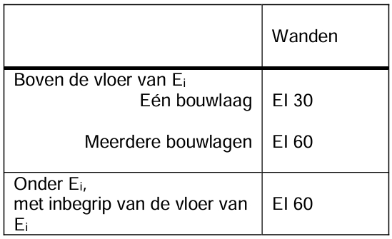

Deze basisreglementering bepaalt de minimale eisen waaraan de opvatting, de bouw en de inrichting van lage gebouwen (LG) moeten voldoen om:
Member 0.1.1.1
het ontstaan, de ontwikkeling en de voortplanting van brand te voorkomen;
Member 0.1.1.2
de veiligheid van de aanwezigen te waarborgen;
Member 0.1.1.3
preventief het ingrijpen van de brandweer te vergemakkelijken.
0.2 Toepassingsgebied.
0.2.1
Article A0.2.1.1
Deze bijlage is van toepassing op de volgende op te richten gebouwen en de volgende uitbreidingen van bestaande gebouwen, waarvoor de aanvraag voor de bouw wordt ingediend vanaf 1 december 2012:
Member 0.2.1.1.1
1. de lage gebouwen;
Member 0.2.1.1.2
2. de uitbreidingen van gebouwen die na realisatie een laag gebouw zijn;
Member 0.2.1.1.3
3. de lokalen of delen van lage gebouwen waarin een industriële activiteit plaatsvindt en waarvan de totale oppervlakte kleiner is dan of gelijk is aan 500 m², onder de volgende voorwaarden:
Member 0.2.1.1.3.1
in het gebouw hoofdzakelijk niet-industriële activiteiten plaats vinden en de totale oppervlakte van de lokalen met industriële activiteit kleiner is dan de overblijvende oppervlakte van het gebouw;
Member 0.2.1.1.3.2
de industriële activiteiten in deze lokalen de niet-industriële activiteiten in hetzelfde compartiment ondersteunen;
Member 0.2.1.1.3.3
er geen lokalen met nachtbezetting zijn in het compartiment waarin er industriële activiteiten plaatsvinden.
0.2.2
Article A0.2.2.1
Uitgesloten van het toepassingsgebied van deze bijlage zijn echter:
Member 0.2.2.1.1
1. de industriegebouwen;
Member 0.2.2.1.2
2. de gebouwen bestaande uit maximaal twee bouwlagen en met een totale oppervlakte kleiner dan of gelijk aan 100 m²;
Member 0.2.2.1.3
3. de eengezinswoningen.
0.3 Platen
0.3.1 [De platen zijn opgenomen bij de betreffende tekst]
Plaat 2.1 - Gevels tussen gebouwen
Plaat 2.2 - Gevels tussen compartimenten
Figure F2.1
Figure F2.2
1 INPLANTING EN TOEGANGSWEGEN.
Article A1.1
Member 1.1.1
De toegangswegen bedoeld in punt 1.1 worden bepaald in akkoord met de brandweer, volgens de volgende leidraad.
1.1 Bereikbaarheid en opstelmogelijkheden brandweer
Article A1.1.1
Member 1.1.1.1
Voor de gebouwen met één bouwlaag moeten de voertuigen van de brandweer ten minste tot op 60 m van een gevel van het gebouw kunnen naderen.
Member 1.1.1.2
Voor de gebouwen met meer dan één bouwlaag moeten de voertuigen van de brandweer ten minste in één punt een gevel kunnen bereiken die op herkenbare plaatsen toegang geeft tot iedere bouwlaag.
Member 1.1.1.3
Daartoe moeten de voertuigen beschikken over een toegangsmogelijkheid en een opstelplaats:
Member 1.1.1.3.1
a) ofwel op de berijdbare rijweg van de openbare weg;
Member 1.1.1.3.2
b) ofwel op een bijzondere toegangsweg vanaf de berijdbare rijweg van de openbare weg en die de volgende karakteristieken vertoont:
Member 1.1.1.3.2.1
minimale vrije breedte: 4 m;
Member 1.1.1.3.2.2
minimale draaicirkel met draaistraal 11 m (aan de binnenkant) en 15 m (aan de buitenkant);
Member 1.1.1.3.2.3
minimale vrije hoogte: 4 m;
Member 1.1.1.3.2.4
maximale helling: 6%;
Member 1.1.1.3.2.5
draagvermogen: derwijze dat voertuigen, zonder verzinken, met een maximale asbelasting van 13t er kunnen rijden en stilstaan, zelfs wanneer ze het terrein vervormen.
Member 1.1.1.3.3
Voor de kunstwerken welke zich op de toegangswegen bevinden, richt men zich naar NBN B 03-101.
Bijgebouwen, uitspringende daken, luifels, uitkragende delen of andere dergelijke toevoegingen zijn enkel toegelaten indien daardoor noch de evacuatie, noch de veiligheid van de gebruikers, noch de actie van de brandweer in het gedrang komen.
1.3 Horizontale afstand tussen gebouwen
Article A1.3.1
Om te vermijden dat een brand tussen twee gebouwen kan overslaan:
Member 1.3.1.1
Member 1.3.1.1.1
a) ofwel, als gevels tegenover elkaar staan of een inspringende tweevlakshoek vormen, dan bedraagt de afstand (in m) tussen de geveldelen die niet minstens EI 60 of REI 60 hebben, ten minste: (h + 10)/2.5 cos(α) voor 0° ≤ α ≤ 90° 0 voor 90° < α ≤ 180° waarbij α de ingesloten hoek is en h de hoogte van het gebouw in m (zie plaat 2.1).
Member 1.3.1.1.1.1
Voor de gebouwen waarvoor de aanvraag voor de bouw werd ingediend voor 1 juli 2022, is een horizontale afstand tussen de gebouwen van 6 m voldoende.
Member 1.3.1.1.2
b) ofwel mag de straling van een brand van een gebouw op een tegenoverstaand gebouw, en omgekeerd, niet meer dan 15 kW/m² bedragen.
Member 1.3.1.2
De wanden die aangrenzende gebouwen scheiden hebben EI 60, of REI 60 wanneer ze dragend zijn. In deze wanden mag een verbinding tussen deze gebouwen bestaan via een deur EI1 30, zelfsluitend of zelfsluitend in geval van brand.
Member 1.3.1.3
De voorwaarde van de afstand tussen een laag gebouw en een tegenoverstaand gebouw geldt niet voor gebouwen die van elkaar gescheiden worden door bestaande straten, wegen,... behorende tot het openbaar domein.
Figure F2.1
2 COMPARTIMENTERING EN EVACUATIE.
2.1 Grootte van de compartimenten
Article A2.1.1
Member 2.1.1.1
Het gebouw is verdeeld in compartimenten waarvan de oppervlakte kleiner is dan 2500 m², met uitzondering van de parkings (zie 5.2).
Member 2.1.1.2
De maximale oppervlakte van een gelijkvloers gebouw bestaande uit één compartiment mag 3500 m² bedragen.
Member 2.1.1.3
De lengte van dit compartiment bedraagt niet meer dan 90 m.
Member 2.1.1.4
De maximale oppervlakte van een compartiment mag, respectievelijk, groter dan ofwel 2500 m², ofwel 3500 m² bedragen indien het compartiment is uitgerust met een automatische blusinstallatie en een rook- en warmteafvoerinstallatie.
Member 2.1.1.4.1
De Minister van Binnenlandse Zaken bepaalt de voorwaarden waaronder uitzonderingen mogelijk zijn op de grootte van het compartiment respectievelijk ofwel 2500 m² ofwel 3500 m² zonder dat een automatische blusinstallatie en/of een rook- en warmteafvoerinstallatie moet voorzien worden.
Article A2.1.2
Member 2.1.2.1
De hoogte van een compartiment stemt overeen met de hoogte van één bouwlaag.
Member 2.1.2.2
De volgende uitzonderingen zijn nochtans toegestaan:
Member 2.1.2.2.1
a) de parking met bouwlagen (zie 5.2);
Member 2.1.2.2.2
b) een compartiment mag zich uitstrekken over twee boven elkaar gelegen bouwlagen met een binnenverbindingstrap (duplex), indien de gecumuleerde oppervlakte van die bouwlagen niet groter is dan 2500 m²;
Member 2.1.2.2.3
c) de hoogte van een compartiment mag zich uitstrekken over drie boven elkaar gelegen bouwlagen met een binnenverbindingstrap (triplex), voor zover de som van hun gecumuleerde oppervlakte de 300 m² niet overschrijdt, en dat dit compartiment is uitgerust met een automatische branddetectie van het type totale bewaking die automatisch een aanduiding van de brandmelding geeft en waarvan de detectoren aangepast zijn aan de aanwezige risico's;
Member 2.1.2.2.4
d) de hoogte van een compartiment mag zich uitstrekken over verscheidene boven elkaar geplaatste bouwlagen, indien dit compartiment slechts technische lokalen omvat (zie 5.1.1).
Member 2.1.2.2.5
e) de hoogte van een compartiment mag zich uitstrekken over verscheidene bouwlagen (atrium) op voorwaarde:
Member 2.1.2.2.5.1
dat dit compartiment is uitgerust met een automatische blusinstallatie en een rook- en warmteafvoerinstallatie.
Member 2.1.2.2.5.1.1
De Minister van Binnenlandse Zaken bepaalt de voorwaarden waaronder uitzonderingen mogelijk zijn op de verplichte plaatsing van een automatische blusinstallatie en een rook- en warmteafvoerinstallatie;
Member 2.1.2.2.5.1.2
De Minister van Binnenlandse Zaken bepaalt de voorwaarden waaraan de automatische blusinstallatie en rook- en warmteafvoerinstallatie moeten voldoen.
2.2 Evacuatie van de compartimenten.
2.2.1 Aantal uitgangen.
Article A2.2.1.1
Member 2.2.1.1.1
Elk compartiment heeft minimum:
Member 2.2.1.1.1.1
één uitgang indien de maximale bezetting minder dan 100 personen bedraagt;
Member 2.2.1.1.1.2
twee uitgangen indien de bezetting 100 of meer dan 100 en minder dan 500 personen bedraagt;
Member 2.2.1.1.1.3
2 + n uitgangen waarbij n het geheel getal is onmiddellijk groter dan het quotiënt van de deling door 1000 van de maximale bezetting van het compartiment, indien de bezetting 500 of meer dan 500 personen bedraagt.
Member 2.2.1.1.2
Het minimum aantal uitgangen kan door de brandweer verhoogd worden in functie van de bezetting en de configuratie van de lokalen.
Member 2.2.1.1.3
Het aantal uitgangen van bouwlagen en lokalen wordt bepaald zoals voor de compartimenten.
2.2.2 De uitgangen.
Article A2.2.2.1
Member 2.2.2.1.1
De uitgangen zijn gelegen in tegenovergestelde zones van het compartiment.
Member 2.2.2.1.2
De evacuatiewegen leiden ofwel:
Member 2.2.2.1.2.1
naar buiten;
Member 2.2.2.1.2.2
naar trappenhuizen;
Member 2.2.2.1.2.3
naar trappen, binnen of buiten het gebouw gelegen (voor de horizontale afstanden zie 4.4).
Member 2.2.2.1.3
Wat de ondergrondse bouwlagen betreft mag één uitgang naar buiten via een evacuatieweg met wanden EI 30 en deuren EI1 30 de vereiste toegang tot één der trappenhuizen vervangen.
Member 2.2.2.1.4
Voor de parking: zie 5.2.
Member 2.2.2.1.5
Op een evacuatieniveau leidt iedere trap naar buiten, hetzij rechtstreeks, hetzij over een evacuatieweg die beantwoordt aan de voorschriften van 4.4.
3 VOORSCHRIFTEN VOOR SOMMIGE BOUWELEMENTEN.
3.1 Doorvoeringen door wanden.
Article A3.1.1
Member 3.1.1.1
Doorvoeringen doorheen wanden van leidingen voor fluïda of voor elektriciteit en de uitzetvoegen van wanden mogen de vereiste brandweerstand van de bouwelementen niet nadelig beïnvloeden.
Member 3.1.1.2
De bepalingen van bijlage 7 "Gemeenschappelijke bepalingen", hoofdstuk 1, zijn van toepassing.
De structurele elementen beschikken, in functie van hun situatie, over een brandweerstand zoals weergegeven in tabel 2.1, waarin Ei het laagst gelegen evacuatieniveau voorstelt.
Table T2.1
3.3 Verticale binnenwanden en binnendeuren.
Article A3.3.1
Member 3.3.1.1
Voor de wanden en de deuren, die compartimenten afbakenen, geldt 4.1; bakenen zij evacuatiewegen af dan geldt 4.4.
Member 3.3.1.2
De verticale binnenwanden die lokalen of het geheel van lokalen met nachtbezetting afbakenen hebben een brandweerstand, aangegeven in tabel 2.2.
Member 3.3.1.3
De deuren in deze wanden hebben EI1 30.
Table T2.2
3.4 Plafonds en verlaagde plafonds.
3.4.1
Article A3.4.1.1
Member 3.4.1.1.1
In de evacuatiewegen, de voor het publiek toegankelijke lokalen en de collectieve keukens hebben de verlaagde plafonds EI 30 (ab), EI 30 (ba) of EI 30 (a ↔ b) volgens NBN EN 13501- 2 en NBN EN 1364-2 of hebben een stabiliteit bij brand van een ½ h volgens NBN 713-020.
Deze vereiste is niet van toepassing op de uitzonderingen opgenomen in punt 4.4.1.2 en op de compartimenten die zijn uitgerust met een automatische blusinstallatie van het type sprinkler die is aangepast aan de aanwezige risico's.
3.4.2
Article A3.4.2.1
Member 3.4.2.1.1
De wanden waarvoor brandwerendheid vereist is, lopen door in de ruimte tussen het plafond en het verlaagd plafond.
Member 3.4.2.1.2
Indien de ruimte tussen het plafond en het verlaagd plafond niet is uitgerust met een automatische blusinstallatie, moet deze ruimte worden verdeeld in volumes waarvan de horizontale projectie kan ingeschreven worden in een vierkant van maximum 25 m zijde.
Member 3.4.2.1.2.1
Deze volumes worden gescheiden door verticale schermen met de volgende kenmerken:
Member 3.4.2.1.2.1.1
zij bestaan uit een materiaal van klasse A1 en/of A2-s1,d0;
Member 3.4.2.1.2.1.2
zij beslaan de gehele ruimte tussen de leidingen;
Member 3.4.2.1.2.1.3
zij hebben EI 30.
3.5 Gevels
3.5.1 Enkelwandige gevels
3.5.1.1 Scheiding tussen compartimenten
Article A3.5.1.1.1
Member 3.5.1.1.1.1
De stijlen van het gordijngevelskelet worden ter hoogte van elke bouwlaag aan het gebouwskelet bevestigd. Met uitzondering van de gebouwen die uitgerust zijn met een automatische blusinstallatie, moeten deze bevestigingen R 60 zijn ten opzichte van een brand in een onderliggend en naastgelegen compartiment.
Member 3.5.1.1.1.2
De lineaire voeg aan de gevel is dichtgemaakt zodat geen koude rook tussen de gevel en de compartimentswanden kan dringen.
Member 3.5.1.1.1.3
Bovendien heeft de aansluiting van de compartimentswanden met de gevel, met uitzondering van een beperkte lineaire voeg met een breedte van maximaal 20 mm aan de gevel, minstens EI 60 of EI 60 (i→o).
3.5.1.2 Tegenover elkaar staande gevels en gevels die een tweevlakshoek vormen
Article A3.5.1.2.1
Om te vermijden dat een brand tussen twee compartimenten kan overslaan:
Member 3.5.1.2.1.1
a) ofwel, als gevels tegenover elkaar staan of een inspringende tweevlakshoek vormen, dan bedraagt de afstand (in m) tussen de geveldelen die niet minstens E 30 of E 30 (o→i) hebben, ten minste: h + 10cos α voor 0° ≤ α ≤ 90° 2,5 0 voor 90° < α ≤ 180° waarbij α de ingesloten hoek is en h de hoogte van het gebouw in m (zie plaat 2.2).
Member 3.5.1.2.1.1.1
Voor de gebouwen waarvoor de aanvraag voor de bouw werd ingediend voor 1 juli 2022, mag ook de volgende formule worden gebruikt: h + 5cos α 2
Member 3.5.1.2.1.2
b) ofwel mag de straling van een brand tussen gevels behorende tot verschillende compartimenten niet meer dan 15 kW/m² bedragen.
Figure F2.2
3.5.2 Dubbelwandige gevels.
3.5.2.1 Dubbelwandige gevel die onderbroken wordt door een compartimentering.
Article A3.5.2.1.1
Member 3.5.2.1.1.1
De spouw van de dubbelwandige gevel wordt in het verlengde van elke compartimentswand onderbroken door een element dat minstens E 60 heeft. Dit element beslaat de volledige ruimte begrepen tussen de twee wanden en heeft een minimale lengte van 60 cm te tellen vanaf de binnenwand van de gevel.
Member 3.5.2.1.1.2
Dit element mag openingen bevatten, op voorwaarde dat de continuïteit van de compartimentering door de spouw heen verzekerd wordt door een bij brand zelfsluitende afsluitinrichting met een brandweerstand E 60. Deze inrichting wordt beproefd in zijn dragende constructie, volgens de richting van de compartimentswand; de sluiting ervan wordt bevolen:
Member 3.5.2.1.1.2.1
- hetzij door een thermische detectie ter hoogte van deze inrichting die reageert bij een temperatuur van maximaal 100°C.
Member 3.5.2.1.1.2.2
- hetzij door een rookdetectie in de spouw of in alle compartimenten langs de gevel, die voldoet aan de voorwaarden in punt 3.5.2.3.
Member 3.5.2.1.1.3
Wanneer er verluchtingsopeningen zijn tussen de spouw van de dubbelwandige gevel en de binnenomgeving van het gebouw, is enkel een rookdetectie toegelaten in de spouw of in alle compartimenten langs de gevel. Zij voldoet aan de voorwaarden van punt 3.5.2.3.
3.5.2.2 Dubbelwandige gevel zonder compartimentering.
Article A3.5.2.2.1
Member 3.5.2.2.1.1
De dubbelwandige gevels zonder compartimentering moeten in overeenstemming zijn met een van de twee hierna opgenomen mogelijkheden.
3.5.2.2.1 Dubbelwandige gevel waarvan de binnenwand brandwerend is.
Article A3.5.2.2.1.1
Member 3.5.2.2.1.1.1
De buitenwand van de dubbelwandige gevel bestaat tussen de verdiepingen voor minstens 50% uit bouwelementen zonder specifieke brandweerstand.
Member 3.5.2.2.1.1.2
De binnenwand heeft:
Member 3.5.2.2.1.1.2.1
- hetzij, over de volledige hoogte, minstens een brandweerstand E 30 (i↔o);
Member 3.5.2.2.1.1.2.2
- hetzij afwisselend om de twee bouwlagen minstens een brandweerstand EI 30 (i↔o).
3.5.2.2.2 Dubbelwandige gevel naar buiten toe open.
Article A3.5.2.2.2.1
Member 3.5.2.2.2.1.1
De voorschriften voor enkelwandige gevels mogen toegepast worden op de binnenwand wanneer de buitenwand vaste of mobiele ventilatieopeningen bevat die automatisch openen bij brand.
Member 3.5.2.2.2.1.2
De vaste ventilatieopeningen zijn geplaatst op 30 ± 10 graden naar de buitenkant en naar boven toe ten opzichte van de horizontale, gelijkmatig verdeeld over ten minste 50% van de oppervlakte ervan.
Member 3.5.2.2.2.1.3
De mobiele ventilatieopeningen voldoen, bij brand, aan dezelfde voorwaarden als de vaste ventilatieopeningen.
Member 3.5.2.2.2.1.4
De veiligheidsstand van de mobiele lamellen wordt in werking gesteld door een algemene branddetectie-installatie in de compartimenten langs gevels. De automatische bediening moet voldoen aan de voorwaarden voorzien in punt 3.5.2.3.
De sluiting / opening wordt bevolen door een automatische branddetectie-installatie.
Member 3.5.2.3.1.1.2
De installatie wordt uitgerust met manuele openings- en sluitingssystemen. De bediening ervan is voorbehouden aan de brandweer. De plaats ervan moet bepaald worden in akkoord met de brandweer.
3.5.2.3.2 Bedrijfszekerheid.
Article A3.5.2.3.2.1
Member 3.5.2.3.2.1.1
Bij het uitvallen van de normale energiebron (elektrische energie, persluchtnet), zet de detectie- installatie of het bedieningssysteem het sluitings-/openingssysteem in de veiligheidsstand.
Member 3.5.2.3.2.1.2
Elk gebrek aan energiebron, voeding of elektrische of pneumatische bediening moet automatisch gemeld worden aan de detectiecentrale.
3.5.2.3.3 Werking bij brand in een naburig compartiment.
Article A3.5.2.3.3.1
Member 3.5.2.3.3.1.1
Wanneer de sluitings- / openingssystemen geen positieve veiligheid hebben, dan moeten de elektrische leidingen die het sluitings-/openingssysteem verbinden, voldoen aan punt 6.5.2.
4 VOORSCHRIFTEN INZAKE CONSTRUCTIE VAN COMPARTIMENTEN EN EVACUATIERUIMTEN.
Article A4.1
VOORSCHRIFTEN INZAKE CONSTRUCTIE VAN COMPARTIMENTEN EN EVACUATIERUIMTEN.
Member 4.1.1
VOORSCHRIFTEN INZAKE CONSTRUCTIE VAN COMPARTIMENTEN EN EVACUATIERUIMTEN.
4.1 Compartimenten.
Article A4.1.1
De wanden tussen compartimenten hebben minstens de brandweerstand aangegeven in tabel 2.3. De verbinding tussen twee compartimenten is slechts toegestaan indien zij geschiedt via een zelfsluitende of bij brand zelfsluitende deur EI1 30.
Member 4.1.1.1
De wanden tussen compartimenten hebben minstens de brandweerstand aangegeven in tabel 2.3.
Member 4.1.1.2
De verbinding tussen twee compartimenten is slechts toegestaan indien zij geschiedt via een zelfsluitende of bij brand zelfsluitende deur EI1 30.

Table T2.3
4.2 Binnentrappenhuizen.
Article A4.2.1
Binnentrappenhuizen.
Member 4.2.1.1
Binnentrappenhuizen.
4.2.1 Algemeen.
Article A4.2.1.1
Algemeen. De trappen die verscheidene compartimenten verbinden zijn omsloten. De grondbeginselen van 2 "Compartimentering en evacuatie" zijn erop van toepassing.
Member 4.2.1.1.1
De trappen die verscheidene compartimenten verbinden zijn omsloten.
Member 4.2.1.1.2
De grondbeginselen van 2 "Compartimentering en evacuatie" zijn erop van toepassing.
4.2.2 Opvatting.
4.2.2.1
Article A4.2.2.1.1
De binnenwanden van de trappenhuizen hebben minstens EI 60. Hun buitenwanden mogen beglaasd zijn indien deze openingen over ten minste 1 m zijdelings afgezet zijn met een element E 30.
Member 4.2.2.1.1.1
De binnenwanden van de trappenhuizen hebben minstens EI 60.
Member 4.2.2.1.1.2
Hun buitenwanden mogen beglaasd zijn indien deze openingen over ten minste 1 m zijdelings afgezet zijn met een element E 30.
4.2.2.2
Article A4.2.2.2.1
De trappenhuizen moeten toegang geven tot een evacuatieniveau.
Member 4.2.2.2.1.1
De trappenhuizen moeten toegang geven tot een evacuatieniveau.
4.2.2.3
Article A4.2.2.3.1
Op iedere bouwlaag wordt de verbinding tussen het compartiment en het trappenhuis verzekerd door een deur EI1 30. Een rechtstreekse verbinding van elke bouwlaag van een duplex met het trappenhuis is niet vereist, op voorwaarde dat: - de totale oppervlakte van het duplexcompartiment of het duplexappartement kleiner is dan of gelijk is aan 300 m²; - de oppervlakte van de bouwlaag van de duplex die niet rechtstreeks evacueert via het trappenhuis, kleiner is dan of gelijk is aan 150 m². De rechtstreekse verbinding van elke bouwlaag van een triplex met het trappenhuis is niet vereist, op voorwaarde dat: - de oppervlakte van elke bouwlaag van de triplex die niet rechtstreeks evacueert via het trappenhuis, kleiner is dan of gelijk is aan 100 m²; - de verbinding met de triplex minstens gebeurt: - voor een triplex met uitsluitend dagbezetting die zich uitstrekt over het evacuatieniveau (E), de onmiddellijk hoger gelegen bouwlaag (E+1) en de onmiddellijk lager gelegen bouwlaag (E-1), vanaf de bouwlaag gelegen op het evacuatieniveau; - in de andere gevallen, vanaf de laagst gelegen bouwlaag en één van de twee andere bouwlagen.
Member 4.2.2.3.1.1
Op iedere bouwlaag wordt de verbinding tussen het compartiment en het trappenhuis verzekerd door een deur EI1 30.
Member 4.2.2.3.1.2
Een rechtstreekse verbinding van elke bouwlaag van een duplex met het trappenhuis is niet vereist, op voorwaarde dat: - de totale oppervlakte van het duplexcompartiment of het duplexappartement kleiner is dan of gelijk is aan 300 m²; - de oppervlakte van de bouwlaag van de duplex die niet rechtstreeks evacueert via het trappenhuis, kleiner is dan of gelijk is aan 150 m².
Member 4.2.2.3.1.3
De rechtstreekse verbinding van elke bouwlaag van een triplex met het trappenhuis is niet vereist, op voorwaarde dat: - de oppervlakte van elke bouwlaag van de triplex die niet rechtstreeks evacueert via het trappenhuis, kleiner is dan of gelijk is aan 100 m²; - de verbinding met de triplex minstens gebeurt: - voor een triplex met uitsluitend dagbezetting die zich uitstrekt over het evacuatieniveau (E), de onmiddellijk hoger gelegen bouwlaag (E+1) en de onmiddellijk lager gelegen bouwlaag (E-1), vanaf de bouwlaag gelegen op het evacuatieniveau; - in de andere gevallen, vanaf de laagst gelegen bouwlaag en één van de twee andere bouwlagen.
4.2.2.4
Article A4.2.2.4.1
Indien verscheidene compartimenten in eenzelfde horizontaal vlak liggen, mogen zij een of meerdere gemeenschappelijke trappenhuizen hebben op voorwaarde dat deze toegankelijk zijn vanuit elk compartiment via een zelfsluitende of bij brand zelfsluitende deur EI1 30.
Member 4.2.2.4.1.1
Indien verscheidene compartimenten in eenzelfde horizontaal vlak liggen, mogen zij een of meerdere gemeenschappelijke trappenhuizen hebben op voorwaarde dat deze toegankelijk zijn vanuit elk compartiment via een zelfsluitende of bij brand zelfsluitende deur EI1 30.
4.2.2.5
Article A4.2.2.5.1
De trappenhuizen die de ondergrondse bouwlagen bedienen, mogen niet rechtstreeks het verlengde zijn van degene die de bouwlagen boven een evacuatieniveau bedienen. Dit sluit niet uit dat het ene boven het andere mag liggen, mits volgende voorwaarden: 1. de wanden die ze scheiden hebben EI 60. 2. de toegang tot ieder trappenhuis geschiedt via een zelfsluitende of bij brand zelfsluitende deur EI1 30.
Member 4.2.2.5.1.1
De trappenhuizen die de ondergrondse bouwlagen bedienen, mogen niet rechtstreeks het verlengde zijn van degene die de bouwlagen boven een evacuatieniveau bedienen.
Member 4.2.2.5.1.2
Dit sluit niet uit dat het ene boven het andere mag liggen, mits volgende voorwaarden:
Member 4.2.2.5.1.2.1
1. de wanden die ze scheiden hebben EI 60.
Member 4.2.2.5.1.2.2
2. de toegang tot ieder trappenhuis geschiedt via een zelfsluitende of bij brand zelfsluitende deur EI1 30.
Member 4.2.2.5.1.3
4.2.2.6
Article A4.2.2.6.1
Bovenaan elk binnentrappenhuis zit een verluchtingsopening met een doorsnede van minimum 1 m² en die uitmondt in de open lucht. Deze opening is normaal gesloten; voor het openen gebruikt men een handbediening die goed zichtbaar geplaatst is op het evacuatieniveau. Deze eis geldt niet voor trappenhuizen tussen evacuatieniveau en ondergrondse bouwlagen. Indien trappenhuizen maximaal twee bovengrondse verdiepingen, met een oppervlakte kleiner dan of gelijk aan 300 m², met het evacuatieniveau verbinden, mag de oppervlakte van de verluchtingsopening beperkt worden tot 0,5 m². Indien het trappenhuis door de aanwezigheid van een duplex bovenaan het gebouw niet alle bouwlagen bedient, wordt de verluchtingsopening met het trappenhuis verbonden aan de hand van een koker waarvan de doorsnede minstens gelijk is aan de oppervlakte vereist voor de verluchtingsopening.
Member 4.2.2.6.1.1
Bovenaan elk binnentrappenhuis zit een verluchtingsopening met een doorsnede van minimum 1 m² en die uitmondt in de open lucht. Deze opening is normaal gesloten; voor het openen gebruikt men een handbediening die goed zichtbaar geplaatst is op het evacuatieniveau.
Member 4.2.2.6.1.2
Deze eis geldt niet voor trappenhuizen tussen evacuatieniveau en ondergrondse bouwlagen.
Member 4.2.2.6.1.3
Indien trappenhuizen maximaal twee bovengrondse verdiepingen, met een oppervlakte kleiner dan of gelijk aan 300 m², met het evacuatieniveau verbinden, mag de oppervlakte van de verluchtingsopening beperkt worden tot 0,5 m².
Member 4.2.2.6.1.4
Indien het trappenhuis door de aanwezigheid van een duplex bovenaan het gebouw niet alle bouwlagen bedient, wordt de verluchtingsopening met het trappenhuis verbonden aan de hand van een koker waarvan de doorsnede minstens gelijk is aan de oppervlakte vereist voor de verluchtingsopening.
4.2.3 Trappen.
4.2.3.1 Constructiebepalingen.
Article A4.2.3.1.1
De trappen hebben de volgende kenmerken:
Member 4.2.3.1.1.1
1. evenals de overlopen hebben zij R 30 of zijn op dezelfde manier ontworpen als een betonplaat met R 30. Er wordt evenwel geen stabiliteit bij brand vereist voor de trappen en de overlopen die uitsluitend zijn samengesteld uit materialen van klasse A1, met een smelttemperatuur groter dan 727°C (staal voldoet bijvoorbeeld aan deze voorwaarde, aluminium en glas voldoen niet aan deze voorwaarde);
Member 4.2.3.1.1.2
2. zij zijn aan beide zijden uitgerust met leuningen. Voor de trappen met een nuttige breedte, kleiner dan 1,20 m, is één leuning voldoende, voor zover er geen gevaar is voor het vallen;
Member 4.2.3.1.1.3
3. de aantrede van de treden is in elk punt ten minste 20 cm;
Member 4.2.3.1.1.4
4. de optrede van de treden mag niet meer dan 18 cm bedragen;
Member 4.2.3.1.1.5
5. hun helling mag niet meer dan 75 % bedragen (maximale hellingshoek 37°);
Member 4.2.3.1.1.6
6. zij zijn van het "rechte type". Maar, "wenteltrappen" worden toegestaan zo ze verdreven treden hebben en zo hun treden, naast de hiervoor vermelde vereisten, (met uitzondering van voornoemd punt 3), ten minste 24 cm aantrede hebben op de looplijn.
4.2.3.2 Nuttige breedte van traparmen, overlopen en sassen.
Article A4.2.3.2.1
Member 4.2.3.2.1.1
Deze nuttige breedte is ten minste gelijk aan 0,80 m en bereikt ten minste de vereiste nuttige breedte br berekend volgens bijlage 1 "Terminologie".
Member 4.2.3.2.1.2
De traparmen en de overlopen der trappenhuizen van één zelfde compartiment mogen in hun nuttige breedte niet meer dan één doorgangseenheid verschillen.
Member 4.2.3.2.1.3
Bevat een compartiment lokalen met speciale bestemming dan wordt de theoretische nuttige trapbreedte (volgens bijlage 1 "Terminologie") op basis van hun aantal gebruikers slechts berekend over de hoogte tussen dit compartiment en het evacuatieniveau.
4.3 Buitentrappenhuizen.
Article A4.3.1
Buitentrappen moeten toegang geven tot een evacuatieniveau. De voorschriften van 4.2.3 zijn er op van toepassing met nochtans de volgende afwijking: er wordt geen stabiliteit bij brand vereist, maar het materiaal behoort tot klasse A1. De verbinding tussen het compartiment en een buitentrap gebeurt: - hetzij via een deur; - hetzij via (een) vluchtterras(sen). Voor de verbinding tussen het evacuatieniveau en de onmiddellijk hoger gelegen bouwlaag mag echter een trap of gedeelte van trap aangewend worden die inschuifbaar of geleed is.
Member 4.3.1.1
Buitentrappen moeten toegang geven tot een evacuatieniveau.
Member 4.3.1.2
De voorschriften van 4.2.3 zijn er op van toepassing met nochtans de volgende afwijking: er wordt geen stabiliteit bij brand vereist, maar het materiaal behoort tot klasse A1.
Member 4.3.1.3
De verbinding tussen het compartiment en een buitentrap gebeurt:
Member 4.3.1.3.1
- hetzij via een deur;
Member 4.3.1.3.2
- hetzij via (een) vluchtterras(sen).
Member 4.3.1.4
Voor de verbinding tussen het evacuatieniveau en de onmiddellijk hoger gelegen bouwlaag mag echter een trap of gedeelte van trap aangewend worden die inschuifbaar of geleed is.
4.4 Evacuatiewegen en vluchtterrassen.
Article A4.4.1
Evacuatiewegen en vluchtterrassen.
Member 4.4.1.1
Evacuatiewegen en vluchtterrassen.
4.4.1 Algemene voorschriften
4.4.1.1
Article A4.4.1.1.1
Geen enkel punt van een compartiment mag zich verder bevinden dan:
Member 4.4.1.1.1.1
a) voor lokalen met uitsluitend dagbezetting:
Member 4.4.1.1.1.1.1
- 30 m van de evacuatieweg die de uitgangen verbindt;
Member 4.4.1.1.1.1.2
- 45 m van de toegang tot de dichtstbijzijnde uitgang;
Member 4.4.1.1.1.1.3
- 80 m van de toegang tot een tweede uitgang.
Member 4.4.1.1.1.2
b) voor lokalen of geheel van lokalen met nachtbezetting:
Member 4.4.1.1.1.2.1
- 20 m van de evacuatieweg die de uitgangen verbindt;
Member 4.4.1.1.1.2.2
- 30 m van de toegang tot de dichtstbijzijnde uitgang;
Member 4.4.1.1.1.2.3
- 60 m van de toegang tot een tweede uitgang.
Member 4.4.1.1.1.3
De lengte van doodlopende evacuatiewegen mag niet meer dan 15 m bedragen.
Member 4.4.1.1.1.4
De nuttige breedte van de evacuatiewegen, vluchtterrassen en van hun toegangs-, uitgangs- of doorgangsdeuren is groter dan of gelijk aan de vereiste nuttige breedte (zie bijlage 1 "Terminologie"). Zij bedraagt ten minste 0,80 m voor de evacuatiewegen en de deuren, en ten minste 0,60 m voor de vluchtterrassen.
Member 4.4.1.1.1.5
In een compartiment gaat de verbinding tussen en naar de trappen via evacuatiewegen of over vluchtterrassen.
Member 4.4.1.1.1.6
De bepalingen van dit punt zijn niet van toepassing op parkings (zie 5.2).
4.4.1.2
Article A4.4.1.2.1
Wordt beschouwd als een uitgang van een compartiment:
Member 4.4.1.2.1.1
- een binnentrappenhuis conform het punt 4.2;
Member 4.4.1.2.1.2
- een buitentrappenhuis conform het punt 4.3;
Member 4.4.1.2.1.3
- een rechtstreekse toegang tot de open lucht op een evacuatieniveau;
Member 4.4.1.2.1.4
- een evacuatieweg op een evacuatieniveau waarvan de verticale binnenwanden EI 60 hebben en de deuren van de lokalen die op deze wegen uitgeven zelfsluitend of bij brand zelfsluitend zijn en EI1 30 hebben.
Member 4.4.1.2.1.5
De in open lucht af te leggen weg speelt geen rol bij het berekenen van deze afstanden.
Member 4.4.1.2.1.6
De deuren op deze wegen mogen geen vergrendeling bezitten die de evacuatie kan belemmeren.
Member 4.4.1.2.1.7
De eventuele verticale binnenwanden van de evacuatiewegen hebben EI 30 en de toegangsdeuren tot deze wegen EI1 30.
Member 4.4.1.2.1.8
Deze vereiste, alsook de vereiste van punten 3.4.1 en 6.7.2.1, zijn niet van toepassing op de compartimenten met uitsluitend dagbezetting waarvan de oppervlakte geen 1250 m² bereikt.
Member 4.4.1.2.1.9
Deze vereiste, alsook de vereiste van punten 3.4.1 en 6.7.2.1, zijn ook niet van toepassing op de compartimenten met uitsluitend dagbezetting waarvan de oppervlakte kleiner is dan 2500 m² op voorwaarde:
Member 4.4.1.2.1.9.1
- dat deze compartimenten zijn uitgerust met een automatische blusinstallatie van het type sprinkler die is aangepast aan de aanwezige risico's;
Member 4.4.1.2.1.9.2
- dat het gebouw is uitgerust met een automatisch branddetectie van het type totale bewaking die automatisch een aanduiding van de brandmelding en de plaats ervan aangeeft en waarvan de detectoren aangepast zijn aan de aanwezige risico's;
Member 4.4.1.2.1.9.3
- en dat de producten die gebruikt worden voor de bekleding van verticale wanden, plafonds en vloeren van die compartimenten voldoen aan de vereisten inzake reactie bij brand op de evacuatiewegen.
Member 4.4.1.2.1.10
De evacuatie van lokalen of een geheel van lokalen met nachtbezetting gebeurt via evacuatiewegen waarvan de verticale wanden EI 30 en de deuren EI1 30 hebben.
Member 4.4.1.2.1.11
Deze eis is niet van toepassing voor de evacuatie van deze lokalen indien deze behoren bij de uitbating van een gebouw met een commerciële functie.
4.4.2 Op een evacuatieniveau
Article A4.4.2.1
Op een evacuatieniveau mogen geen uitstalramen van bouwdelen met een commerciële functie, die geen EI 30 hebben, uitgeven op de evacuatieweg die de uitgangen van andere bouwdelen verbindt met de openbare weg, met uitzondering van de laatste 3 m van deze evacuatieweg.
Member 4.4.2.1.1
Op een evacuatieniveau mogen geen uitstalramen van bouwdelen met een commerciële functie, die geen EI 30 hebben, uitgeven op de evacuatieweg die de uitgangen van andere bouwdelen verbindt met de openbare weg
Member 4.4.2.1.2
met uitzondering van de laatste 3 m van deze evacuatieweg.
4.5 Signalisatie.
Article A4.5.1
Signalisatie. Het volgnummer van elke bouwlaag wordt duidelijk aangebracht op de overlopen en in de vluchtruimten bij trappenhuizen en liften. De aanduiding van de uitgangen en nooduitgangen dient te voldoen aan de bepalingen betreffende de veiligheids- en gezondheidssignalering op het werk.
Member 4.5.1.1
Het volgnummer van elke bouwlaag wordt duidelijk aangebracht op de overlopen en in de vluchtruimten bij trappenhuizen en liften.
Member 4.5.1.2
De aanduiding van de uitgangen en nooduitgangen dient te voldoen aan de bepalingen betreffende de veiligheids- en gezondheidssignalering op het werk.
5 CONSTRUCTIEVOORSCHRIFTEN VOOR SOMMIGE LOKALEN EN TECHNISCHE RUIMTEN.
Article A5.1
CONSTRUCTIEVOORSCHRIFTEN VOOR SOMMIGE LOKALEN EN TECHNISCHE RUIMTEN.
Member 5.1.1
CONSTRUCTIEVOORSCHRIFTEN VOOR SOMMIGE LOKALEN EN TECHNISCHE RUIMTEN.
5.1 Technische lokalen en ruimten.
Article A5.1.1
Technische lokalen en ruimten.
Member 5.1.1.1
Technische lokalen en ruimten.
5.1.1 Algemeen.
Article A5.1.1.1
Een technisch lokaal of een geheel van technische lokalen vormt een compartiment. Dit compartiment kan over verscheidene opeenvolgende bouwlagen reiken. Voor de technische lokalen gelden de voorschriften inzake de compartimenten mits volgende wijzigingen:
Member 5.1.1.1.1
1. toegang tot twee uitgangen die leiden: - hetzij naar een aanpalend compartiment via een deur EI1 30; - hetzij naar een trappenhuis via een deur EI1 30; - hetzij naar de open lucht, derwijze dat een evacuatieniveau bereikbaar is;
Member 5.1.1.1.2
2. afwijkend van 4.4.1 mag geen enkel punt van het compartiment zich verder bevinden dan : - 45 m van de weg die in het technisch compartiment de twee uitgangen verbindt; - 60 m van de dichtstbijzijnde uitgang; - 100 m van de tweede uitgang; Indien nochtans de oppervlakte van het technische compartiment niet groter is dan 1000 m², volstaat één uitgang naar een trappenhuis, naar buiten of naar een ander compartiment. In dit geval mag de af te leggen weg naar deze uitgang niet groter zijn dan 60 m;
Member 5.1.1.1.3
3. indien de hoogte van het technisch compartiment over verscheidene opeenvolgende bouwlagen (zie 2.1) reikt en indien het meerdere dienstvloeren omvat die verbonden zijn door trappen of ladders: - indien de compartimentsoppervlakte kleiner is dan 1000 m², om de twee dienstvloeren, beginnend met de laagste, volstaat één toegang tot een trappenhuis, naar buiten of naar een ander compartiment; - indien de compartimentsoppervlakte groter is dan 1000 m², dan moet elke dienstvloer toegang verlenen tot ten minste één van de twee uitgangen; deze uitgangen wisselen af van vloer tot vloer;
Member 5.1.1.1.4
4. de nuttige breedte van evacuatiewegen, traparmen, overlopen en sassen bedraagt ten minste 0,80 m.
5.1.2 Stookafdelingen.
5.1.2.1 Stooklokalen met verbrandingstoestellen met een gecumuleerd verbrandingsdebiet groter dan of gelijk aan 75 kW en brandstofopslagruimtes.
Article A5.1.2.1.1
De stooklokalen met verbrandingstoestellen met een gecumuleerd verbrandingsdebiet groter dan of gelijk aan 75 kW en de brandstofopslagruimtes, zijn technische lokalen. De voorschriften van punt 5.1.1 zijn van toepassing, mits volgende wijzigingen:
Member 5.1.2.1.1.1
- Elke stooklokaal en brandstofopslagruimte moet een afzonderlijk compartiment vormen;
Member 5.1.2.1.1.2
- De binnenwanden van deze stooklokalen en brandstofopslagruimtes EI 60 hebben;
Member 5.1.2.1.1.3
- Toegang tot deze stooklokalen en brandstofopslagruimtes:
Member 5.1.2.1.1.3.1
- Hetzij via een zelfsluitende deur EI1 60;
Member 5.1.2.1.1.3.2
- Hetzij via een sas met de volgende kenmerken:
Member 5.1.2.1.1.3.2.1
1. het bevat zelfsluitende deuren EI1 30;
Member 5.1.2.1.1.3.2.2
2. de wanden hebben EI 60;
Member 5.1.2.1.1.3.2.3
3. de oppervlakte bedraagt minimum 2 m²;
Member 5.1.2.1.1.3.3
- Hetzij via een uitgang in open lucht, derwijze dat een evacuatieniveau bereikbaar is.
Member 5.1.2.1.1.3.4
De deuren draaien open in de vluchtzin.
Member 5.1.2.1.1.4
- Geen enkel punt van deze stooklokalen en brandstofopslagruimtes mag zich verder bevinden dan 15 m van de dichtstbijzijnde uitgang.
Member 5.1.2.1.1.5
De capaciteit van een brandstofopslagruimte wordt beperkt zodat de totale brandlast van de brandstofopslagruimte kleiner is dan of gelijk aan 750 GJ.
5.1.2.2 Gemeenschappelijke bepalingen.
Article A5.1.2.2.1
Het ontwerp, de bouw en de inrichting van de stookafdelingen voldoen aan de bepalingen van punt 4 van bijlage 7.
Member 5.1.2.2.1.1
Het ontwerp, de bouw en de inrichting van de stookafdelingen voldoen aan de bepalingen van punt 4 van bijlage 7.
5.1.2.3 Afwijkende bepalingen.
Article A5.1.2.3.1
Voor de gebouwen waarvoor de aanvraag voor de bouw werd ingediend voor 1 juli 2022, gelden de volgende afwijkende bepalingen:
Member 5.1.2.3.1.1
- Punt 5.1.2.1: Niet van toepassing op de stookafdelingen met verbrandingstoestellen met een totaal nuttig warmtevermogen (ook totaal nominaal vermogen genoemd) kleiner dan 70 kW;
Member 5.1.2.3.1.2
- Punt 5.1.2.1: Niet van toepassing op de stookafdelingen met verbrandingstoestellen met een totaal nuttig warmtevermogen (ook totaal nominaal vermogen genoemd) groter dan of gelijk aan 70 kW als de toegang tot de stookafdeling en de brandwerendheid van de muren, vloeren, plafonds en deuren van de stookafdeling voldoen aan de voorschriften van de norm NBN B 61-001 +A1 : 1996. In afwijking op deze norm mogen de stookafdelingen en hun bijvertrekken verbonden worden met de andere gedeelten van het gebouw via een zelfsluitende deur EI1 60 op voorwaarde dat deze niet uitgeeft op een trappenhuis noch op een liftoverloop noch in een lokaal met bijzonder risico. De deur draait in de vluchtzin.
Zij voldoen aan de voorschriften van het Algemeen reglement op de elektrische installaties (A.R.E.I.).
Member 5.1.3.1.1.2
Verder geldt dat:
Member 5.1.3.1.1.2.1
- de wanden EI 60 hebben, behalve de buitenmuren;
Member 5.1.3.1.1.2.2
- de binnendeuren EI1 30 hebben;
Member 5.1.3.1.1.2.3
- indien water (van om het even welke herkomst, dus ook bluswater) de vloer kan bereiken, bij voorbeeld door infiltratie of via kabelgoten, dan dienen alle maatregelen te worden getroffen opdat het waterpeil constant en automatisch beneden het niveau van de vitale gedeelten blijft van de elektrische installatie, zolang ze in gebruik is.
Member 5.1.3.1.1.3
Indien de olie-inhoud van het geheel der toestellen 50 l of meer bereikt, moeten de voorschriften van NBN C 18-200 "Richtlijnen voor de brandbeveiliging van de lokalen van elektriciteitstransformatie" toegepast worden.
5.1.3.2 Ter plaatse gemonteerde posten of prefab-posten.
Article A5.1.3.2.1
Member 5.1.3.2.1.1
Een ter plaatse gemonteerde post of een prefab-post wordt opgesteld in een daartoe bestemd lokaal, met wanden EI 60.
Member 5.1.3.2.1.2
De toegang, zo die niet van buitenaf geschiedt, gaat via een deur EI1 30.
5.1.4 Huisvuilafvoer.
5.1.4.1 Stortkokers zijn verboden.
Article A5.1.4.1.1
Stortkokers zijn verboden.
Member 5.1.4.1.1.1
Stortkokers zijn verboden.
5.1.4.2 Lokaal voor de opslag van het huisvuil.
Article A5.1.4.2.1
Lokaal voor de opslag van het huisvuil. De wanden hebben EI 60. Het lokaal is toegankelijk via een zelfsluitende deur EI1 30.
Member 5.1.4.2.1.1
De wanden hebben EI 60.
Member 5.1.4.2.1.2
Het lokaal is toegankelijk via een zelfsluitende deur EI1 30.
5.1.5 Leidingenkokers.
5.1.5.1 Verticale kokers.
Article A5.1.5.1.1
Wanneer verticale kokers door horizontale wanden dringen waarvoor een brandweerstand vereist is, geldt één van de volgende drie maatregelen:
Member 5.1.5.1.1.1
1. de wanden van de verticale kokers hebben een brandweerstand EI 60; de valluiken en deurtjes hebben EI1 30. Zij hebben aan hun boveneind een degelijke verluchting. De vrije verluchtingsdoorsnede van de koker is ten minste gelijk aan 10% van de totale horizontale doorsnede van de koker, met een minimum van 4 dm². De vrije verluchtingsdoorsnede kan uitgerust worden met gemotoriseerde verluchtingskleppen waarvan de opening als volgt bevolen wordt: - automatisch bij detectie van een brand in de koker; - automatisch bij de detectie van een brand in het gebouw, indien dit uitgerust is met een algemene branddetectie-installatie; - automatisch bij een defect aan de energiebron, de voeding of de bediening (toestel met positieve veiligheid); - manueel via een bediening op een evacuatieniveau op een in akkoord met de brandweer bepaalde plaats. Indien de vrije verluchtingsdoorsnede van een koker uitgerust is met een gemotoriseerde verluchtingsklep, moeten de eventuele gasleidingen in deze koker beantwoorden aan de voorschriften van de norm NBN D 51-003 of van de norm NBN D 51-006 voor de leidingen en verbindingen in een niet-verluchte technische koker.
2. ter hoogte van de doorvoering bevindt zich een bouwelement met minstens de vereiste brandweerstand van de horizontale wand;
Member 5.1.5.1.1.3
3. de wanden van de verticale kokers hebben EI 30; de valluiken en deurtjes EI1 30; de verticale kokers worden ter hoogte van elk compartiment onderbroken door horizontale schermen met de volgende kenmerken: - zij bestaan uit een materiaal van klasse A1 en/of A2-s1,d0; - zij beslaan de gehele ruimte tussen de leidingen; - zij hebben EI 30.
Member 5.1.5.1.1.4
In gevallen 2 en 3 moeten de kokers niet verlucht zijn.
5.1.5.2 Horizontale kokers.
Article A5.1.5.2.1
Wanneer horizontale kokers door verticale wanden dringen waarvoor een brandweerstand vereist is, geldt één van de volgende drie maatregelen:
Member 5.1.5.2.1.1
1. de wanden van de horizontale kokers en de valluiken en deurtjes hebben minstens de vereiste brandweerstand van de verticale wand;
Member 5.1.5.2.1.2
2. ter hoogte van de doorvoering bevindt zich een bouwelement met minstens de vereiste brandweerstand van de verticale wand;
Member 5.1.5.2.1.3
3. de wanden van de horizontale kokers hebben EI 30; de valluiken en deurtjes EI1 30; de kokers worden ter hoogte van elk compartiment onderbroken door verticale schermen met de volgende kenmerken: - ze bestaan uit een materiaal van klasse A1 en/of A2-s1,d0; - ze beslaan de gehele ruimte tussen de leidingen; - ze hebben EI 30.
5.2 Parkings.
Article A5.2.1
Parkings. Bij afwijking van het in punt 2.1 gestelde grondbeginsel kan een parking een compartiment vormen waarvan de oppervlakte niet beperkt is, zelfs wanneer er verscheidene communicerende bouwlagen zijn.
Member 5.2.1.1
Bij afwijking van het in punt 2.1 gestelde grondbeginsel kan een parking een compartiment vormen waarvan de oppervlakte niet beperkt is, zelfs wanneer er verscheidene communicerende bouwlagen zijn.
5.2.1 Structurele elementen.
Article A5.2.1.1
Structurele elementen. In afwijking van het punt 3.2 hebben de structurele elementen van de parking R 120 en de vloeren van de parkeerbouwlagen en van de hellingen hebben R 120. Wanneer het dak geen andere functie heeft dan alleen het beschermen van de parking tegen de weersomstandigheden: - hebben de structurele elementen van het dak R 30; - of worden de structurele elementen van het dak gescheiden van de rest van de parking door een bouwelement EI 30. Voor de open parkeerbouwlagen worden de structurele elementen aan geen enkele vereiste onderworpen inzake brandweerstand, op voorwaarde: - dat de vloeren van deze open parkeerbouwlagen en de hellingen tussen deze open parkeerbouwlagen minstens REI 60 hebben; - en dat deze structurele elementen geen ander compartiment dragen.
Member 5.2.1.1.1
In afwijking van het punt 3.2 hebben de structurele elementen van de parking R 120 en de vloeren van de parkeerbouwlagen en van de hellingen hebben R 120.
Member 5.2.1.1.2
Wanneer het dak geen andere functie heeft dan alleen het beschermen van de parking tegen de weersomstandigheden:
Member 5.2.1.1.2.1
- hebben de structurele elementen van het dak R 30;
Member 5.2.1.1.2.2
- of worden de structurele elementen van het dak gescheiden van de rest van de parking door een bouwelement EI 30.
Member 5.2.1.1.3
Voor de open parkeerbouwlagen worden de structurele elementen aan geen enkele vereiste onderworpen inzake brandweerstand, op voorwaarde:
Member 5.2.1.1.3.1
- dat de vloeren van deze open parkeerbouwlagen en de hellingen tussen deze open parkeerbouwlagen minstens REI 60 hebben;
Member 5.2.1.1.3.2
- en dat deze structurele elementen geen ander compartiment dragen.
5.2.2 Compartiment.
Article A5.2.2.1
Compartiment. De wanden tussen de parking en de rest van het gebouw hebben EI 60, en de verbinding tussen de parking en de rest van het gebouw wordt verzekerd: - ofwel door een sas met wanden EI 60 en zelfsluitende of bij brand zelfsluitende deuren EI1 30; - ofwel door een zelfsluitende of bij brand zelfsluitende deur EI1 60.
Member 5.2.2.1.1
De wanden tussen de parking en de rest van het gebouw hebben EI 60,
Member 5.2.2.1.2
en de verbinding tussen de parking en de rest van het gebouw wordt verzekerd:
Member 5.2.2.1.2.1
ofwel door een sas met wanden EI 60 en zelfsluitende of bij brand zelfsluitende deuren EI1 30;
Member 5.2.2.1.2.2
ofwel door een zelfsluitende of bij brand zelfsluitende deur EI1 60.
5.2.3 Parking onder verschillende gebouwen.
Article A5.2.3.1
Parking onder verschillende gebouwen. In afwijking van het punt 1.3 moeten de parkings van aangrenzende gebouwen niet door een wand worden afgescheiden. Die parkings vormen bijgevolg slechts één en dezelfde parking. In dat geval hebben de structurele elementen van de gehele parking R 120, met inbegrip van de structurele elementen van de open parkeerbouwlagen.
Member 5.2.3.1.1
In afwijking van het punt 1.3 moeten de parkings van aangrenzende gebouwen niet door een wand worden afgescheiden. Die parkings vormen bijgevolg slechts één en dezelfde parking.
Member 5.2.3.1.2
In dat geval hebben de structurele elementen van de gehele parking R 120, met inbegrip van de structurele elementen van de open parkeerbouwlagen.
5.2.4 Gemeenschappelijke bepalingen.
Article A5.2.4.1
Gemeenschappelijke bepalingen. Het ontwerp, de bouw en de inrichting van de parking voldoen aan de bepalingen van het punt 3 van de bijlage 7.
Member 5.2.4.1.1
Het ontwerp, de bouw en de inrichting van de parking voldoen aan de bepalingen van het punt 3 van de bijlage 7.
Afwijkende bepalingen. De punten 5.2.1 tot 5.2.4 zijn niet van toepassing op de parking van een gebouw waarvoor de aanvraag voor de bouw werd ingediend vóór 1 juli 2022 als het voldoet aan de volgende voorwaarden. In afwijking van het punt 3.2, worden er geen eisen voor brandweerstand gesteld aan de structurele elementen van open parkings waarvan de horizontale wanden REI 60 bezitten. De wanden tussen de parking en de rest van het gebouw hebben EI 60. In het parkeercompartiment mogen sommige, niet voor verblijf bestemde lokalen worden opgenomen, zoals: transformatorlokalen, bergingen, archieflokalen, technische ruimten … De wanden van deze lokalen vertonen EI 60 en de toegang geschiedt door een zelfsluitende of bij brand zelfsluitende deur EI1 30. De specifieke voorschriften betreffende de stookafdelingen, de transformatorlokalen en de lokalen voor vuilnisopslag blijven van toepassing (cf. respectievelijk de punten 5.1.2, 5.1.3 en 5.1.4). Op elke bouwlaag is de evacuatie als volgt geregeld: - ten minste twee trappenhuizen of buitentrappen voldoen aan de voorschriften vervat in 4.2 of 4.3 en zijn vanuit ieder punt van de bouwlaag toegankelijk; de af te leggen weg naar de dichtstbijzijnde trap mag niet meer dan 45 m bedragen; de minimale nuttige breedte van deze trappen bedraagt 0,80 m; - zoals gesteld in 2.2.2, derde lid, mag op de beschouwde bouwlaag de vereiste toegang tot één van de twee trappenhuizen vervangen worden door een rechtstreekse uitgang naar de open lucht; - op de bouwlaag die het dichtst bij het uitritniveau ligt, mag de hellende rijweg één der trappenhuizen of buitentrappen vervangen indien de helling gemeten in haar hartlijn niet meer dan 10 % bedraagt; - de beperking van de helling tot 10% geldt niet voor de compartimenten waarvan de oppervlakte gelijk of kleiner is dan 500 m², indien evacuatie via de helling mogelijk blijft; - buiten de signalisatie bepaald in 4.5 worden de evacuatiewegen, op elke bouwlaag, ook nog aangeduid op de vloer of juist erboven. Eén enkele uitgang per bouwlaag (binnentrappenhuis, buitentrap, rechtstreekse uitgang naar de open lucht of hellende rijweg op de bouwlaag die het dichtst bij het uitritniveau ligt) is evenwel voldoende op voorwaarde: - dat de parking zich in de hoogte uitstrekt over maximum twee bouwlagen; - dat geen enkele van deze beide bouwlagen zich op meer dan twee bouwlagen boven of onder het uitritniveau voor voertuigen bevindt; - dat geen enkel punt van de parking zich op een afstand verder dan 15 m van de toegang tot de evacuatieweg naar de uitgang bevindt; - en dat geen enkel punt van de parking zich op een afstand verder dan 30 m van de toegang tot de uitgang bevindt. In de gesloten parkings met een totale oppervlakte groter dan 2500 m², moeten de maatregelen genomen worden die noodzakelijk zijn om de verspreiding van rook te voorkomen.
Member 5.2.5.1.1
De punten 5.2.1 tot 5.2.4 zijn niet van toepassing op de parking van een gebouw waarvoor de aanvraag voor de bouw werd ingediend vóór 1 juli 2022 als het voldoet aan de volgende voorwaarden.
Member 5.2.5.1.2
In afwijking van het punt 3.2, worden er geen eisen voor brandweerstand gesteld aan de structurele elementen van open parkings waarvan de horizontale wanden REI 60 bezitten.
Member 5.2.5.1.3
De wanden tussen de parking en de rest van het gebouw hebben EI 60.
Member 5.2.5.1.4
In het parkeercompartiment mogen sommige, niet voor verblijf bestemde lokalen worden opgenomen, zoals: transformatorlokalen, bergingen, archieflokalen, technische ruimten … De wanden van deze lokalen vertonen EI 60 en de toegang geschiedt door een zelfsluitende of bij brand zelfsluitende deur EI1 30.
Member 5.2.5.1.5
De specifieke voorschriften betreffende de stookafdelingen, de transformatorlokalen en de lokalen voor vuilnisopslag blijven van toepassing (cf. respectievelijk de punten 5.1.2, 5.1.3 en 5.1.4).
Member 5.2.5.1.6
Op elke bouwlaag is de evacuatie als volgt geregeld:
Member 5.2.5.1.6.1
- ten minste twee trappenhuizen of buitentrappen voldoen aan de voorschriften vervat in 4.2 of 4.3 en zijn vanuit ieder punt van de bouwlaag toegankelijk; de af te leggen weg naar de dichtstbijzijnde trap mag niet meer dan 45 m bedragen; de minimale nuttige breedte van deze trappen bedraagt 0,80 m;
Member 5.2.5.1.6.2
- zoals gesteld in 2.2.2, derde lid, mag op de beschouwde bouwlaag de vereiste toegang tot één van de twee trappenhuizen vervangen worden door een rechtstreekse uitgang naar de open lucht;
Member 5.2.5.1.6.3
- op de bouwlaag die het dichtst bij het uitritniveau ligt, mag de hellende rijweg één der trappenhuizen of buitentrappen vervangen indien de helling gemeten in haar hartlijn niet meer dan 10 % bedraagt;
Member 5.2.5.1.6.4
- de beperking van de helling tot 10% geldt niet voor de compartimenten waarvan de oppervlakte gelijk of kleiner is dan 500 m², indien evacuatie via de helling mogelijk blijft;
Member 5.2.5.1.6.5
- buiten de signalisatie bepaald in 4.5 worden de evacuatiewegen, op elke bouwlaag, ook nog aangeduid op de vloer of juist erboven.
Member 5.2.5.1.7
Eén enkele uitgang per bouwlaag (binnentrappenhuis, buitentrap, rechtstreekse uitgang naar de open lucht of hellende rijweg op de bouwlaag die het dichtst bij het uitritniveau ligt) is evenwel voldoende op voorwaarde:
Member 5.2.5.1.7.1
- dat de parking zich in de hoogte uitstrekt over maximum twee bouwlagen;
Member 5.2.5.1.7.2
- dat geen enkele van deze beide bouwlagen zich op meer dan twee bouwlagen boven of onder het uitritniveau voor voertuigen bevindt;
Member 5.2.5.1.7.3
- dat geen enkel punt van de parking zich op een afstand verder dan 15 m van de toegang tot de evacuatieweg naar de uitgang bevindt;
Member 5.2.5.1.7.4
- en dat geen enkel punt van de parking zich op een afstand verder dan 30 m van de toegang tot de uitgang bevindt.
Member 5.2.5.1.8
In de gesloten parkings met een totale oppervlakte groter dan 2500 m², moeten de maatregelen genomen worden die noodzakelijk zijn om de verspreiding van rook te voorkomen.
Member 5.2.5.1.9
5.3 Zalen.
Article A5.3.1
Zalen.
Member 5.3.1.1
Zalen.
5.3.1 Algemeen.
Article A5.3.1.1
Algemeen. Kunnen er meer dan 500 personen in verblijven, dan mogen deze zalen enkel ondergronds ingericht worden wanneer het verschil tussen het laagste vloerpeil van deze zalen en het dichtstbijzijnde gelegen evacuatieniveau niet groter is dan 3 m. Zijn voornoemde zalen bestemd voor maximum 500 personen dan mogen zij ondergronds ingericht worden op voorwaarde dat het voor het publiek toegankelijke laagste vloerpeil niet meer dan 4 m ligt beneden het gemiddelde peil der verschillende evacuatieniveaus van de inrichting. Het aantal uitgangen wordt bepaald zoals voor de compartimenten.
Member 5.3.1.1.1
Kunnen er meer dan 500 personen in verblijven, dan mogen deze zalen enkel ondergronds ingericht worden wanneer het verschil tussen het laagste vloerpeil van deze zalen en het dichtstbijzijnde gelegen evacuatieniveau niet groter is dan 3 m.
Member 5.3.1.1.2
Zijn voornoemde zalen bestemd voor maximum 500 personen dan mogen zij ondergronds ingericht worden op voorwaarde dat het voor het publiek toegankelijke laagste vloerpeil niet meer dan 4 m ligt beneden het gemiddelde peil der verschillende evacuatieniveaus van de inrichting.
Member 5.3.1.1.3
Het aantal uitgangen wordt bepaald zoals voor de compartimenten.
5.3.2 Constructie.
Article A5.3.2.1
Constructie. De wanden die deze lokalen of geheel van lokalen vormen, voldoen niet alleen aan de reglementaire voorschriften die op deze ruimten van toepassing zijn, maar hebben bovendien dezelfde brandweerstand als de wanden van een compartiment. Elke doorgang in de verticale wanden is afgesloten door een zelfsluitende of bij brand zelfsluitende deur EI1 30. Deze deuren draaien open in de vluchtzin. Geen enkel voorwerp mag de evacuatie naar de uitgangen hinderen.
Member 5.3.2.1.1
De wanden die deze lokalen of geheel van lokalen vormen, voldoen niet alleen aan de reglementaire voorschriften die op deze ruimten van toepassing zijn, maar hebben bovendien dezelfde brandweerstand als de wanden van een compartiment.
Member 5.3.2.1.2
Elke doorgang in de verticale wanden is afgesloten door een zelfsluitende of bij brand zelfsluitende deur EI1 30.
Member 5.3.2.1.3
Deze deuren draaien open in de vluchtzin.
Member 5.3.2.1.4
Geen enkel voorwerp mag de evacuatie naar de uitgangen hinderen.
5.4 Winkel- of handelscomplex.
Article A5.4.1
Winkel- of handelscomplex. De inrichting van winkellokalen die op binnengalerijen uitgeven wordt toegelaten op een evacuatieniveau en op de aangrenzende bouwlagen mits: 1. het complex met zijn galerijen van de overige bouwdelen gescheiden is door wanden met EI 60; 2. de overige bouwdelen hun eigen uitgangen hebben onafhankelijk van de uitgangen van het winkel- of handelscomplex. De scheidingswanden tussen de handelslokalen hebben EI 30 en lopen door in het eventueel verlaagd plafond. Dit laatste voorschrift vervalt indien het winkel- of handelscomplex voorzien is van een automatische blusinstallatie van het type sprinkler die is aangepast aan de aanwezige risico's.
Member 5.4.1.1
De inrichting van winkellokalen die op binnengalerijen uitgeven wordt toegelaten op een evacuatieniveau en op de aangrenzende bouwlagen mits:
Member 5.4.1.1.1
1. het complex met zijn galerijen van de overige bouwdelen gescheiden is door wanden met EI 60;
Member 5.4.1.1.2
2. de overige bouwdelen hun eigen uitgangen hebben onafhankelijk van de uitgangen van het winkel- of handelscomplex.
Member 5.4.1.2
De scheidingswanden tussen de handelslokalen hebben EI 30 en lopen door in het eventueel verlaagd plafond.
Member 5.4.1.3
Dit laatste voorschrift vervalt indien het winkel- of handelscomplex voorzien is van een automatische blusinstallatie van het type sprinkler die is aangepast aan de aanwezige risico's.
5.5 Collectieve keukens.
Article A5.5.1
Collectieve keukens. De collectieve keukens, eventueel met inbegrip van het restaurant, worden van de andere bouwdelen gescheiden door wanden EI 60. Elke doorgang wordt afgesloten door een zelfsluitende of bij brand zelfsluitende deur EI1 30. Deze deuren draaien in de vluchtrichting van de keuken. Wanneer de keuken en het restaurant van elkaar zijn gecompartimenteerd, moeten de horizontale en verticale transportsystemen tussen keuken en restaurant aan de volgende voorwaarden voldoen: - dit transport gebeurt in kokers met wanden EI 60 wanneer het door andere lokalen gaat; - het transportsysteem wordt ter hoogte van de compartimentswand(en) afgesloten met een voorziening EI1 60. Wanneer de keuken niet gecompartimenteerd is ten opzichte van het restaurant, is elk vast frituurtoestel voorzien van een vaste automatische blusinstallatie die gekoppeld wordt aan een toestel dat de toevoer van energie naar het frituurtoestel onderbreekt.
Member 5.5.1.1
De collectieve keukens, eventueel met inbegrip van het restaurant, worden van de andere bouwdelen gescheiden door wanden EI 60.
Member 5.5.1.2
Elke doorgang wordt afgesloten door een zelfsluitende of bij brand zelfsluitende deur EI1 30. Deze deuren draaien in de vluchtrichting van de keuken.
Member 5.5.1.3
Wanneer de keuken en het restaurant van elkaar zijn gecompartimenteerd, moeten de horizontale en verticale transportsystemen tussen keuken en restaurant aan de volgende voorwaarden voldoen:
Member 5.5.1.3.1
dit transport gebeurt in kokers met wanden EI 60 wanneer het door andere lokalen gaat;
Member 5.5.1.3.2
het transportsysteem wordt ter hoogte van de compartimentswand(en) afgesloten met een voorziening EI1 60.
Member 5.5.1.4
Wanneer de keuken niet gecompartimenteerd is ten opzichte van het restaurant, is elk vast frituurtoestel voorzien van een vaste automatische blusinstallatie die gekoppeld wordt aan een toestel dat de toevoer van energie naar het frituurtoestel onderbreekt.
Member 5.5.1.5
6 UITRUSTING VAN DE GEBOUWEN.
Article A6.1
UITRUSTING VAN DE GEBOUWEN.
Member 6.1.1
UITRUSTING VAN DE GEBOUWEN.
6.1 Liften en goederenliften.
Article A6.1.1
Liften en goederenliften.
Member 6.1.1.1
Liften en goederenliften.
6.1.1 Algemeen.
Article A6.1.1.1
De machine en de bijhorende onderdelen van een lift of goederenlift zijn niet toegankelijk, behalve voor het onderhoud, de controle en de noodgevallen. De aandrijving bevindt zich: - ofwel in een machinekamer; - ofwel in de schacht. De controleorganen mogen toegankelijk zijn vanaf het bordes, op voorwaarde dat ze de vereiste brandwerendheid van de bordeswand of de wand van de schacht waarin ze worden geplaatst niet nadelig beïnvloeden.
Member 6.1.1.1.1
De machine en de bijhorende onderdelen van een lift of goederenlift zijn niet toegankelijk, behalve voor het onderhoud, de controle en de noodgevallen.
Member 6.1.1.1.2
De aandrijving bevindt zich: - ofwel in een machinekamer; - ofwel in de schacht.
Member 6.1.1.1.3
De controleorganen mogen toegankelijk zijn vanaf het bordes, op voorwaarde dat ze de vereiste brandwerendheid van de bordeswand of de wand van de schacht waarin ze worden geplaatst niet nadelig beïnvloeden.
Article A6.1.1.2
In geval van abnormale stijging van de temperatuur van de machine en/of van de andere elektrische uitrustingen, moeten de liften stoppen op een bordes zodat de passagiers kunnen uitstappen. Een automatische terugkeer naar de normale werking is enkel mogelijk na voldoende afkoeling.
Member 6.1.1.2.1
In geval van abnormale stijging van de temperatuur van de machine en/of van de andere elektrische uitrustingen, moeten de liften stoppen op een bordes zodat de passagiers kunnen uitstappen.
Member 6.1.1.2.2
Een automatische terugkeer naar de normale werking is enkel mogelijk na voldoende afkoeling.
Article A6.1.1.3
In de schacht(en) mag geen enkele blusinrichting met water opgesteld staan.
Member 6.1.1.3.1
In de schacht(en) mag geen enkele blusinrichting met water opgesteld staan.
6.1.2 Opvatting.
6.1.2.1
Article A6.1.2.1.1
Member 6.1.2.1.1.1
Het geheel bestaande uit één of meer schachten en de eventuele machinekamer, alsook toegangsbordessen die een sas moeten vormen voor de ondergrondse bouwlagen, is omsloten door wanden met EI 60.
Member 6.1.2.1.1.2
Hun buitenwanden mogen beglaasd zijn indien deze beantwoorden aan de eisen gesteld in punt 3.5.
Member 6.1.2.1.1.3
De toegangsdeuren tussen het compartiment en het sas hebben EI1 30 en zijn zelfsluitend of zelfsluitend bij brand.
Member 6.1.2.1.1.4
Als de oppervlakte van het sas kleiner is dan de oppervlakte van de kooi van de lift of goederenlift, is de toegangsdeur tussen het compartiment en het sas, een bij brand zelfsluitend draaideur EI1 30 bediend door een branddetectie-installatie die minstens het volgende omvat:
Member 6.1.2.1.1.4.1
- een rookdetectie in de schacht;
Member 6.1.2.1.1.4.2
- en een rookdetectie in het compartiment in de omgeving van de toegangsdeur tot het sas.
Member 6.1.2.1.1.5
Het toegangsbordes mag deel uitmaken van de evacuatieweg.
6.1.2.2
Article A6.1.2.2.1
Member 6.1.2.2.1.1
Het geheel van de schachtdeuren van de lift of goederenlift heeft E 30. De brandwerendheid volgens de norm NBN EN 81-58, waarbij de bordeswand aan de kant van het bordes aan het vuur blootgesteld wordt. De bordeswand zal beproefd worden met de eventuele bedienings- en controleorganen die daarvan deel uitmaken.
Member 6.1.2.2.1.2
De volgens andere methodes geteste schachtdeuren worden aanvaard overeenkomstig het koninklijk besluit van 12 april 2016 betreffende het op de markt brengen van liften en veiligheidscomponenten voor liften, op voorwaarde dat ze ten minste dezelfde graad van brandweerstand hebben.
Member 6.1.2.2.1.3
Deze vereisten zijn niet van toepassing wanneer de lift(en) worden opgesteld in een trappenhuis dat de bouwlagen boven een evacuatieniveau bedient, op voorwaarde:
Member 6.1.2.2.1.3.1
- dat op alle bouwlagen bediend door dit trappenhuis met lift(en), in elke compartiment, de verbinding naar dit trappenhuis met lift(en) via evacuatiewegen gaat;
Member 6.1.2.2.1.3.2
- en dat op alle bouwlagen bediend door dit trappenhuis met lift(en), de verbinding tussen deze evacuatieweg en dit trappenhuis met lift(en) verzekerd wordt door een zelfsluitende of bij brand zelfsluitende deur met EI1 30 die toegang geeft tot een overloop in dit trappenhuis met lift(en).
6.1.2.3
Article A6.1.2.3.1
De voorschriften van de punten 6.1.2.1 en 6.1.2.2 zijn niet vereist in de volgende gevallen:
Member 6.1.2.3.1.1
a) op alle bouwlagen bediend door de lift of goederenlift, indien deze lift of goederenlift de bouwlagen van slechts één compartiment bestaande uit meerdere bouwlagen bedient;
Member 6.1.2.3.1.2
b) op de bouwla(a)g(en) van slechts één van de compartimenten bediend door de lift of goederenlift, op voorwaarde dat dit compartiment geen parkeercompartiment of een appartement is, en dat de opvatting van deze lift of goederenlift op de overige bouwlagen wel voldoet aan de voorschriften van de punten 6.1.2.1 en 6.1.2.2 of aan punt c) hieronder;
Member 6.1.2.3.1.3
c) op de bouwla(a)g(en) waar de lift of goederenlift rechtstreeks in de buitenlucht uitgeeft, op voorwaarde dat de opvatting van deze lift of goederenlift op de overige bouwlagen wel voldoet aan de voorschriften van de punten 6.1.2.1 en 6.1.2.2 of aan punt b) hierboven.
6.1.2.4 Liften en goederenliften waarvan de aandrijving zich in een machinekamer bevindt.
Article A6.1.2.4.1
Member 6.1.2.4.1.1
De binnenwanden van de machinekamer die niet uitgeven op de schacht hebben EI 60.
Member 6.1.2.4.1.2
De deuren of valluiken in deze wanden hebben EI1 30.
Member 6.1.2.4.1.3
De brandweer is verzekerd van de toegang tot de machinekamer.
6.1.2.5 Oleohydraulische liften en goederenliften.
Article A6.1.2.5.1
Member 6.1.2.5.1.1
De ruimte waarin de aandrijving van een oleohydraulische lift of goederenlift is opgesteld, is voorzien van een inkuiping die een inhoud heeft die ten minste gelijk is aan 1,2 maal de olie- inhoud van de machines en reservoirs.
Member 6.1.2.5.1.2
Indien de aandrijving van een oleohydraulische lift of goederenlift in een machinekamer is opgesteld, zijn de elektrische apparatuur evenals de elektrische en hydraulische leidingen die van de machinekamer naar de liftschacht lopen, hoger aangebracht dan het hoogste peil dat de uitgelopen olie in de machinekamer kan bereiken.
6.1.2.6 Liften en roltrappen.
Article A6.1.2.6.1
Member 6.1.2.6.1.1
Het bordes van de lift(en) mag het bordes van een of meerdere roltrappen zijn. Het geheel bestaande uit één of meer schachten en de eventuele machinekamer, alsook toegangsbordessen van de lift(en) en de roltrap(pen), vormt dan slechts één geheel.
6.1.3 Verluchting.
6.1.3.1
Article A6.1.3.1.1
De schacht, de machinekamer of het geheel schacht en machinekamer worden op een natuurlijke manier verlucht via buitenluchtmonden in het bovenste gedeelte. De schacht of het geheel schacht en machinekamer mogen echter verlucht worden via binnenluchtmonden op voorwaarde dat de opvatting van de lift of goederenlift voldoet aan: - ofwel het geval beschreven in a) van punt 6.1.2.3; - ofwel het geval beschreven in b) van punt 6.1.2.3 in zoverre dat de bouwla(a)g(en) waar de voorschriften van de punten 6.1.2.1 en 6.1.2.2 niet zijn vereist, zich boven de overige bouwlagen bevind(t)(en).
Member 6.1.3.1.1.1
De schacht, de machinekamer of het geheel schacht en machinekamer worden op een natuurlijke manier verlucht via buitenluchtmonden in het bovenste gedeelte.
Member 6.1.3.1.1.2
De schacht of het geheel schacht en machinekamer mogen echter verlucht worden via binnenluchtmonden op voorwaarde dat de opvatting van de lift of goederenlift voldoet aan:
Member 6.1.3.1.1.2.1
ofwel het geval beschreven in a) van punt 6.1.2.3;
Member 6.1.3.1.1.2.2
ofwel het geval beschreven in b) van punt 6.1.2.3 in zoverre dat de bouwla(a)g(en) waar de voorschriften van de punten 6.1.2.1 en 6.1.2.2 niet zijn vereist, zich boven de overige bouwlagen bevind(t)(en).
6.1.3.2
Article A6.1.3.2.1
De verluchtingsopeningen hebben een minimale doorsnede van 1 % van de horizontale oppervlakte van de ruimte waaruit de lucht wordt afgevoerd.
Member 6.1.3.2.1.1
De verluchtingsopeningen hebben een minimale doorsnede van 1 % van de horizontale oppervlakte van de ruimte waaruit de lucht wordt afgevoerd.
6.1.3.3
Article A6.1.3.3.1
De verluchtingsopeningen mogen uitgerust worden met gemotoriseerde verluchtingskleppen waarvan de opening als volgt bevolen: - automatisch bevolen wordt om de gebruikers van de lift een toereikende verluchting te verzekeren, zelfs bij een langdurige stilstand; - automatisch bevolen wordt bij een abnormale temperatuursstijging van de machine en/of de controleorganen; - automatisch bevolen wordt bij de detectie van een brand in de schacht en/of in de machinekamer; - automatisch bevolen wordt bij de detectie van een brand in het gebouw, indien dit uitgerust is met een algemene branddetectie-installatie; - automatisch bevolen wordt bij een defect aan de energiebron, de voeding of de bediening (toestel met positieve veiligheid); - manueel via een bediening op een evacuatieniveau.
Member 6.1.3.3.1.1
De verluchtingsopeningen mogen uitgerust worden met gemotoriseerde verluchtingskleppen waarvan de opening als volgt bevolen:
Member 6.1.3.3.1.1.1
automatisch bevolen wordt om de gebruikers van de lift een toereikende verluchting te verzekeren, zelfs bij een langdurige stilstand;
Member 6.1.3.3.1.1.2
automatisch bevolen wordt bij een abnormale temperatuursstijging van de machine en/of de controleorganen;
Member 6.1.3.3.1.1.3
automatisch bevolen wordt bij de detectie van een brand in de schacht en/of in de machinekamer;
Member 6.1.3.3.1.1.4
automatisch bevolen wordt bij de detectie van een brand in het gebouw, indien dit uitgerust is met een algemene branddetectie-installatie;
Member 6.1.3.3.1.1.5
automatisch bevolen wordt bij een defect aan de energiebron, de voeding of de bediening (toestel met positieve veiligheid);
Member 6.1.3.3.1.1.6
manueel via een bediening op een evacuatieniveau.
6.1.4 Werking bij brand.
Article A6.1.4.1
De werking van de liften bij brand beantwoordt aan de volgende voorschriften of elke andere regel van goed vakmanschap die een gelijkwaardig veiligheidsniveau biedt, overeenkomstig het koninklijk besluit van 12 april 2016 betreffende het op de markt brengen van liften en veiligheidscomponenten voor liften. Het werkingsprincipe van de liften bij brand bestaat eruit dat wanneer een signaal dat op een brand wijst wordt ontvangen van de branddetectie-installatie of een manuele oproepvoorziening, de liftkooi naar het aangeduide liftbordes wordt gebracht om de passagiers daar toe te laten uit te stappen en vervolgens de lift uit de normale dienst te halen.
Member 6.1.4.1.1
De werking van de liften bij brand beantwoordt aan de volgende voorschriften of elke andere regel van goed vakmanschap die een gelijkwaardig veiligheidsniveau biedt, overeenkomstig het koninklijk besluit van 12 april 2016 betreffende het op de markt brengen van liften en veiligheidscomponenten voor liften.
Member 6.1.4.1.2
Het werkingsprincipe van de liften bij brand bestaat eruit dat wanneer een signaal dat op een brand wijst wordt ontvangen van de branddetectie-installatie of een manuele oproepvoorziening, de liftkooi naar het aangeduide liftbordes wordt gebracht om de passagiers daar toe te laten uit te stappen en vervolgens de lift uit de normale dienst te halen.
6.1.4.1
Article A6.1.4.1.1
De werking van de liften bij brand beantwoordt aan de voorschriften van de norm NBN EN 81-73.
Member 6.1.4.1.1.1
De werking van de liften bij brand beantwoordt aan de voorschriften van de norm NBN EN 81-73.
Het bordes van de lift op het evacuatieniveau wordt vastgelegd als aangeduide liftbordes.
Member 6.1.4.2.1.1
Het bordes van de lift op het evacuatieniveau wordt vastgelegd als aangeduide liftbordes.
6.1.4.3
Article A6.1.4.3.1
Elke liftbatterij is minstens voorzien van een manuele oproepvoorziening op een evacuatieniveau. Bovendien, als het gebouw uitgerust is met een algemene branddetectie-installatie of met een branddetectie-installatie in de schachten en/of in de machinekamers, moet deze installatie in geval van brand een signaal doorgeven naar de liften.
Member 6.1.4.3.1.1
Elke liftbatterij is minstens voorzien van een manuele oproepvoorziening op een evacuatieniveau.
Member 6.1.4.3.1.2
Bovendien, als het gebouw uitgerust is met een algemene branddetectie-installatie of met een branddetectie-installatie in de schachten en/of in de machinekamers, moet deze installatie in geval van brand een signaal doorgeven naar de liften.
6.1.4.4
Article A6.1.4.4.1
Wanneer er een algemene of gedeeltelijke detectie in het gebouw vereist is en de machinerie van de liften en goederenliften bevindt zich in de schacht, dient een rookdetectie geplaatst te worden in de schacht.
Member 6.1.4.4.1.1
Wanneer er een algemene of gedeeltelijke detectie in het gebouw vereist is en de machinerie van de liften en goederenliften bevindt zich in de schacht, dient een rookdetectie geplaatst te worden in de schacht.
6.1.4.5
Article A6.1.4.5.1
Indien door een branddetectie-installatie een brand gedetecteerd wordt op het bordes dat overeenstemt met het aangeduide hoofdbordes, moet de lift een of meer bijkomende elektrische signalen krijgen opdat de liftkooi naar het aangeduide vervangende bordes wordt afgeleid.
Member 6.1.4.5.1.1
Indien door een branddetectie-installatie een brand gedetecteerd wordt op het bordes dat overeenstemt met het aangeduide hoofdbordes, moet de lift een of meer bijkomende elektrische signalen krijgen opdat de liftkooi naar het aangeduide vervangende bordes wordt afgeleid.
6.1.4.6
Article A6.1.4.6.1
Wanneer de liften bij brand op het aangeduide bordes staan, moet de mogelijkheid bestaan dat de brandweer gemakkelijk kan controleren dat de liftkooien daar staan en dat niemand in de lift opgesloten is. Liften die, bij hun komst op het aangeduide bordes, met open deuren stilstaan en buiten normale werking worden gesteld, voldoen aan deze vereiste.
Member 6.1.4.6.1.1
Wanneer de liften bij brand op het aangeduide bordes staan, moet de mogelijkheid bestaan dat de brandweer gemakkelijk kan controleren dat de liftkooien daar staan en dat niemand in de lift opgesloten is.
Member 6.1.4.6.1.2
Liften die, bij hun komst op het aangeduide bordes, met open deuren stilstaan en buiten normale werking worden gesteld, voldoen aan deze vereiste.
6.1.4.7
Article A6.1.4.7.1
De lift kan enkel terug in normale werking gesteld worden door een bevoegde persoon.
Member 6.1.4.7.1.1
De lift kan enkel terug in normale werking gesteld worden door een bevoegde persoon.
6.1.4.8
Article A6.1.4.8.1
Voor de gebouwen waarvoor de aanvraag voor de bouw werd ingediend voor 1 april 2017, gelden de volgende afwijkende bepalingen: - Punt 6.1.4.1: Enkel van toepassing op liften die ontworpen of gemoderniseerd werden na 31 maart 2017.
Member 6.1.4.8.1.1
Voor de gebouwen waarvoor de aanvraag voor de bouw werd ingediend voor 1 april 2017, gelden de volgende afwijkende bepalingen:
Member 6.1.4.8.1.1.1
Punt 6.1.4.1: Enkel van toepassing op liften die ontworpen of gemoderniseerd werden na 31 maart 2017.
6.2 Paternosterlift, containertransport en goederenlift met laad- en losautomatisme.
Article A6.2.1
Paternosterlift, containertransport en goederenlift met laad- en losautomatisme.
Member 6.2.1.1
Paternosterlift, containertransport en goederenlift met laad- en losautomatisme.
6.2.1 Mechanische transportinrichtingen.
Article A6.2.1.1
Deze toestellen hebben hun eigen machinekamers, schachten en bordessen. De machinekamers bevinden zich bovenaan de schacht. De binnenwanden van de machinekamers en van de schachten hebben EI 60. De binnentoegangsdeuren hebben EI1 30. De schachtwanden aan de kant van het bordes en de toezichtluiken in deze wanden hebben EI 30. De schachtdeuren of toegangsluiken van deze toestellen werken automatisch en zijn normaal gesloten. Zo de installatie van het containertransport een horizontaal en/of verticaal traject volgt en daarbij bouwlagen verdiepingen of compartimenten doorloopt, worden deuren voorzien aan elk van deze doorgangen. Hun luiken en deurtjes hebben E 30. Ze werken automatisch en zijn normaal gesloten. Bij brand worden de installaties buiten dienst gesteld.
Member 6.2.1.1.1
Deze toestellen hebben hun eigen machinekamers, schachten en bordessen.
Member 6.2.1.1.2
De machinekamers bevinden zich bovenaan de schacht. De binnenwanden van de machinekamers en van de schachten hebben EI 60.
Member 6.2.1.1.3
De binnentoegangsdeuren hebben EI1 30.
Member 6.2.1.1.4
De schachtwanden aan de kant van het bordes en de toezichtluiken in deze wanden hebben EI 30.
Member 6.2.1.1.5
De schachtdeuren of toegangsluiken van deze toestellen werken automatisch en zijn normaal gesloten.
Member 6.2.1.1.6
Zo de installatie van het containertransport een horizontaal en/of verticaal traject volgt en daarbij bouwlagen verdiepingen of compartimenten doorloopt, worden deuren voorzien aan elk van deze doorgangen.
Member 6.2.1.1.7
Hun luiken en deurtjes hebben E 30.
Member 6.2.1.1.8
Ze werken automatisch en zijn normaal gesloten.
Member 6.2.1.1.9
Bij brand worden de installaties buiten dienst gesteld.
6.2.2 Paternosterliften.
Article A6.2.2.1
Het installeren van paternosterliften voor personenvervoer is verboden.
Member 6.2.2.1.1
Het installeren van paternosterliften voor personenvervoer is verboden.
6.3 Roltrappen.
Article A6.3.1
Roltrappen.
Member 6.3.1.1
Roltrappen.
6.3.1 Roltrappen.
Article A6.3.1.1
Het trappenhuis van roltrappen heeft wanden met EI 60.
Member 6.3.1.1.1
Het trappenhuis van roltrappen heeft wanden met EI 60.
6.3.2 Op elke bouwlaag.
Article A6.3.2.1
De toegang tot het trappenhuis geschiedt op elke bouwlaag, via een zelfsluitende of bij brand zelfsluitende deur EI1 30.
Member 6.3.2.1.1
De toegang tot het trappenhuis geschiedt op elke bouwlaag, via een zelfsluitende of bij brand zelfsluitende deur EI1 30.
6.3.3 Roltrappen
Article A6.3.3.1
De roltrap wordt automatisch uitgeschakeld zodra er brand gedetecteerd wordt in een compartiment waarheen hij leidt.
Member 6.3.3.1.1
De roltrap wordt automatisch uitgeschakeld zodra er brand gedetecteerd wordt in een compartiment waarheen hij leidt.
6.3.4 Uitzonderingen
Article A6.3.4.1
De voorschriften van de punten 6.3.1 en 6.3.2 zijn niet vereist in de volgende gevallen: a) op alle bouwlagen bediend door de roltrap, indien deze roltrap de bouwlagen van slechts één compartiment bestaande uit meerdere bouwlagen bedient; b) op de bouwla(a)g(en) van slechts één van de compartimenten bediend door de roltrap, op voorwaarde dat dit compartiment geen parkeercompartiment is, en dat de opvatting van deze roltrap op de overige bouwlagen wel voldoet aan de voorschriften van de punten 6.3.1 en 6.3.2 of aan punt c) hieronder; c) op de bouwla(a)g(en) waar de roltrap rechtstreeks in de buitenlucht uitgeeft, op voorwaarde dat de opvatting van deze roltrap op de overige bouwlagen wel voldoet aan de voorschriften van de punten 6.3.1 en 6.3.2 of aan punt b) hierboven.
Member 6.3.4.1.1
a) op alle bouwlagen bediend door de roltrap, indien deze roltrap de bouwlagen van slechts één compartiment bestaande uit meerdere bouwlagen bedient;
Member 6.3.4.1.2
b) op de bouwla(a)g(en) van slechts één van de compartimenten bediend door de roltrap, op voorwaarde dat dit compartiment geen parkeercompartiment is, en dat de opvatting van deze roltrap op de overige bouwlagen wel voldoet aan de voorschriften van de punten 6.3.1 en 6.3.2 of aan punt c) hieronder;
Member 6.3.4.1.3
c) op de bouwla(a)g(en) waar de roltrap rechtstreeks in de buitenlucht uitgeeft, op voorwaarde dat de opvatting van deze roltrap op de overige bouwlagen wel voldoet aan de voorschriften van de punten 6.3.1 en 6.3.2 of aan punt b) hierboven.
6.4 Speciale liften.
Article A6.4.1
Speciale liften. De speciale liften en de werking ervan bij brand beantwoorden aan de volgende voorschriften of elke andere regel van goed vakmanschap die een gelijkwaardig veiligheidsniveau biedt, overeenkomstig het koninklijk besluit van 12 april 2016 betreffende het op de markt brengen van liften en veiligheidscomponenten voor liften.
Member 6.4.1.1
De speciale liften en de werking ervan bij brand beantwoorden aan de volgende voorschriften of elke andere regel van goed vakmanschap die een gelijkwaardig veiligheidsniveau biedt, overeenkomstig het koninklijk besluit van 12 april 2016 betreffende het op de markt brengen van liften en veiligheidscomponenten voor liften.
6.4.1 Liften bestemd voor het evacueren van personen met beperkte mobiliteit.
Article A6.4.1.1
Wanneer een lift bestemd voor het evacueren van personen met beperkte mobiliteit verplicht wordt, moet deze voldoen aan de volgende voorschriften, bovenop de voorschriften opgenomen in punt 6.1.
Member 6.4.1.1.1
Wanneer een lift bestemd voor het evacueren van personen met beperkte mobiliteit verplicht wordt, moet deze voldoen aan de volgende voorschriften, bovenop de voorschriften opgenomen in punt 6.1.
6.4.1.1
Article A6.4.1.1.1
Deze lift moet zodanig ontworpen en gebouwd worden dat de toegang en het gebruik door personen met beperkte mobiliteit niet belemmerd of verhinderd wordt.
Member 6.4.1.1.1.1
Deze lift moet zodanig ontworpen en gebouwd worden dat de toegang en het gebruik door personen met beperkte mobiliteit niet belemmerd of verhinderd wordt.
6.4.1.2
Article A6.4.1.2.1
Op alle bouwlagen vormen de liftbordessen een sas dat beantwoordt aan de voorschriften van punt 6.1.2.1 waarbij de oppervlakte gelijk is aan of groter is dan de oppervlakte van de liftkooi.
Member 6.4.1.2.1.1
Op alle bouwlagen vormen de liftbordessen een sas dat beantwoordt aan de voorschriften van punt 6.1.2.1 waarbij de oppervlakte gelijk is aan of groter is dan de oppervlakte van de liftkooi.
6.4.1.3
Article A6.4.1.3.1
De liftkooien zijn ten minste toegankelijk voor een persoon in een rolstoel en een begeleidende persoon. De minimale afmetingen van de liftkooien zijn 1,1 m (breedte) x 1,4 m (diepte).
Member 6.4.1.3.1.1
De liftkooien zijn ten minste toegankelijk voor een persoon in een rolstoel en een begeleidende persoon.
Member 6.4.1.3.1.2
De minimale afmetingen van de liftkooien zijn 1,1 m (breedte) x 1,4 m (diepte).
6.4.1.4
Article A6.4.1.4.1
De schachtdeuren openen en sluiten automatisch en hebben een nuttige breedte van ten minste 0,90 m.
Member 6.4.1.4.1.1
De schachtdeuren openen en sluiten automatisch en hebben een nuttige breedte van ten minste 0,90 m.
6.4.1.5
Article A6.4.1.5.1
De evacuatie gebeurt onder toezicht van een bevoegd persoon. Hiertoe is de lift uitgerust met een schakelaar met "evacuatiesleutel" die het mogelijk maakt dat een bevoegd persoon de bediening van de lift overneemt.
Member 6.4.1.5.1.1
De evacuatie gebeurt onder toezicht van een bevoegd persoon. Hiertoe is de lift uitgerust met een schakelaar met "evacuatiesleutel" die het mogelijk maakt dat een bevoegd persoon de bediening van de lift overneemt.
6.4.1.6
Article A6.4.1.6.1
De liften bestemd voor de evacuatie van personen met beperkte mobiliteit worden aangeduid met een duidelijke en herkenbare signalering.
Member 6.4.1.6.1.1
De liften bestemd voor de evacuatie van personen met beperkte mobiliteit worden aangeduid met een duidelijke en herkenbare signalering.
6.4.1.7
Article A6.4.1.7.1
De lift moet een intercomsysteem bevatten dat mondelinge tweerichtingscommunicatie toelaat als de lift in evacuatiemodus is. Dit systeem moet toelaten om te communiceren tussen de liftkooi, het evacuatieniveau en de machinekamer of het paneel van de hulpverleningsoperaties. De communicatie-uitrusting in de liftkooi en op het evacuatieniveau moet een ingebouwde microfoon en luidspreker bevatten, een telefoon met hoorn is niet toegelaten. De bedrading van het communicatiesysteem moet in de liftschacht en/of in voorkomend geval in de machinekamer geïnstalleerd zijn.
Member 6.4.1.7.1.1
De lift moet een intercomsysteem bevatten dat mondelinge tweerichtingscommunicatie toelaat als de lift in evacuatiemodus is. Dit systeem moet toelaten om te communiceren tussen de liftkooi, het evacuatieniveau en de machinekamer of het paneel van de hulpverleningsoperaties.
Member 6.4.1.7.1.2
De communicatie-uitrusting in de liftkooi en op het evacuatieniveau moet een ingebouwde microfoon en luidspreker bevatten, een telefoon met hoorn is niet toegelaten.
Member 6.4.1.7.1.3
De bedrading van het communicatiesysteem moet in de liftschacht en/of in voorkomend geval in de machinekamer geïnstalleerd zijn.
6.4.1.8
Article A6.4.1.8.1
Met uitzondering van de liften die slechts twee bouwlagen bedienen, moet elk liftbordes een intercomsysteem bevatten dat mondelinge tweerichtingscommunicatie toelaat als de lift in evacuatiemodus is. Dit systeem moet toelaten om te communiceren tussen elk liftbordes, het evacuatieniveau en de machinekamer of het paneel van de hulpverleningsoperaties, zodat de bouwlagen waarop personen met beperkte mobiliteit die dienen geëvacueerd te worden zich bevinden kunnen herkend worden en deze informatie aan de persoon belast met de evacuatie kan doorgegeven worden. De communicatie-uitrusting op elk liftbordes en op het evacuatieniveau moet een ingebouwde microfoon en luidspreker bevatten, een telefoon met hoorn is niet toegelaten. Het communicatiesysteem is zo ontworpen dat de werking ervan verzekerd blijft in geval van defect van het communicatiesysteem van de liftkooi bedoeld in punt 6.4.1.7.
Member 6.4.1.8.1.1
Met uitzondering van de liften die slechts twee bouwlagen bedienen, moet elk liftbordes een intercomsysteem bevatten dat mondelinge tweerichtingscommunicatie toelaat als de lift in evacuatiemodus is. Dit systeem moet toelaten om te communiceren tussen elk liftbordes, het evacuatieniveau en de machinekamer of het paneel van de hulpverleningsoperaties, zodat de bouwlagen waarop personen met beperkte mobiliteit die dienen geëvacueerd te worden zich bevinden kunnen herkend worden en deze informatie aan de persoon belast met de evacuatie kan doorgegeven worden.
Member 6.4.1.8.1.2
De communicatie-uitrusting op elk liftbordes en op het evacuatieniveau moet een ingebouwde microfoon en luidspreker bevatten, een telefoon met hoorn is niet toegelaten.
Member 6.4.1.8.1.3
Het communicatiesysteem is zo ontworpen dat de werking ervan verzekerd blijft in geval van defect van het communicatiesysteem van de liftkooi bedoeld in punt 6.4.1.7.
6.4.2 Liften bestemd voor de brandweer.
Article A6.4.2.1
Member 6.4.2.1.1
Als het gebouw uitgerust is met een of meer liften bestemd voor de brandweer, moet deze voldoen aan de volgende voorschriften bovenop de voorschriften opgenomen in punt 6.1.
6.4.2.1
Article A6.4.2.1.1
Member 6.4.2.1.1.1
De liften bestemd voor de brandweer en de werking ervan in geval van brand beantwoorden aan de voorschriften van de norm NBN EN 81-72.
Op alle bouwlagen vormen de liftbordessen een sas dat beantwoordt aan de voorschriften van punt 6.1.2.1 waarbij de oppervlakte gelijk is aan of groter is dan de oppervlakte van de liftkooi.
6.4.2.3
Article A6.4.2.3.1
Member 6.4.2.3.1.1
Als er in een liftbatterij geen muur EI 60 is voorzien om de lift bestemd voor de brandweer af te scheiden van de andere liften in een dezelfde schacht, dan moeten alle liften en hun elektrische uitrusting dezelfde bescherming tegen brand hebben als de lift bestemd voor de brandweer.
6.4.2.4
Article A6.4.2.4.1
Member 6.4.2.4.1.1
De minimale afmetingen van de liftkooien zijn 1,1 m (breedte) x 2,1 m (diepte).
6.4.2.5
Article A6.4.2.5.1
Member 6.4.2.5.1.1
De schachtdeuren openen en sluiten automatisch en hebben een nuttige breedte van ten minste 0,80 m.
6.4.2.6
Article A6.4.2.6.1
Member 6.4.2.6.1.1
Op het bordes van het toegangsniveau van de brandweer is een schakelaar met "brandweersleutel" voorzien die de brandweer toelaat om de bediening van de lift over te nemen.
6.4.2.7
Article A6.4.2.7.1
Member 6.4.2.7.1.1
De lift moet de verst van het toegangsniveau van de brandweer gelegen verdieping kunnen bereiken in minder dan 60 seconden na het sluiten van de deuren.
6.4.3 Afwijkende bepalingen.
Article A6.4.3.1
Voor de gebouwen waarvoor de aanvraag voor de bouw werd ingediend voor 1 april 2017, gelden de volgende afwijkende bepalingen:
Member 6.4.3.1.1
- Punt 6.4.1.4: De schachtdeuren van liften ontworpen voor 1 april 2017, openen en sluiten automatisch en hebben een nuttige breedte van ten minste 0,80 m.
Member 6.4.3.1.2
- Punten 6.4.1.6, 6.4.1.7 en 6.4.1.8: Enkel van toepassing op liften die ontworpen of gemoderniseerd werden na 31 maart 2017.
Member 6.4.3.1.3
- Punten 6.4.2: Niet van toepassing.
6.5 Elektrische laagspanningsinstallaties voor drijfkracht, verlichting en signalisatie.
Article A6.5.1
Member 6.5.1.1
Elektrische laagspanningsinstallaties voor drijfkracht, verlichting en signalisatie.
6.5.1 Elektrische laagspanningsinstallaties voor drijfkracht, verlichting en signalisatie.
Article A6.5.1.1
Member 6.5.1.1.1
Zij voldoen aan de voorschriften van de geldende wettelijke en reglementaire teksten, evenals aan het Algemeen Reglement op de Elektrische Installaties (A.R.E.I.).
6.5.2 Specifieke voorschriften voor de elektrische leidingen van veiligheidsinstallaties
Article A6.5.2.1
Member 6.5.2.1.1
De elektrische leidingen die installaties of toestellen voeden die bij brand absoluut in dienst moeten blijven, worden zodanig geplaatst dat de risico's van algehele buitendienststelling gespreid zijn.
Member 6.5.2.1.2
Op hun tracé tot aan het compartiment waar de installatie zich bevindt, hebben de elektrische leidingen de volgende brandweerstand:
Member 6.5.2.1.2.1
a) ofwel een intrinsieke brandweerstand die minimaal - PH 60 bedraagt volgens NBN EN 50200 voor leidingen waarvan de buitendiameter kleiner is dan of gelijk aan 20 mm en waarvan de doorsnede van de geleiders kleiner is dan of gelijk aan 2,5 mm²; - Rf 1 h bedraagt volgens add. 3 van NBN 713-020 voor leidingen waarvan de buitendiameter groter is dan 20 mm of waarvan de doorsnede van de geleiders groter is dan 2,5 mm²;
Deze vereisten zijn niet van toepassing indien de werking van de installaties of toestellen verzekerd blijft zelfs bij het uitvallen van de energievoeding.
Member 6.5.2.1.4
De bedoelde installaties of toestellen zijn:
Member 6.5.2.1.4.1
a) de veiligheidsverlichting en eventueel de vervangingsverlichting;
Member 6.5.2.1.4.2
b) de installaties voor melding, waarschuwing en alarm;
Member 6.5.2.1.4.3
c) de installaties voor rookafvoer;
Member 6.5.2.1.4.4
d) de waterpompen voor de brandbestrijding en eventueel de ledigingspompen;
Member 6.5.2.1.4.5
e) de speciale liften bedoeld in punt 6.4.
6.5.3 Autonome stroombronnen.
Article A6.5.3.1
Member 6.5.3.1.1
De stroomkringen waarvan sprake in 6.5.2 moeten kunnen gevoed worden door één of meer autonome stroombronnen; het vermogen van die bronnen moet voldoende zijn om gelijktijdig alle aan die stroomkringen aangesloten installaties te voeden.
Member 6.5.3.1.2
Zodra de normale stroom uitvalt, verzekeren de autonome bronnen automatisch en binnen één minuut, de werking gedurende één uur van de bovenvermelde installaties.
6.5.4 Veiligheidsverlichting.
Article A6.5.4.1
Member 6.5.4.1.1
De veiligheidsverlichting voldoet aan de voorschriften van de normen NBN EN 1838, NBN EN 60598-2-22 en NBN EN 50172.
Deze veiligheidsverlichting mag gevoed worden door de normale stroombron, maar valt deze uit, dan moet de voeding geschieden door één of meerdere autonome stroombron(nen).
Member 6.5.4.1.3
Autonome verlichtingstoestellen aangesloten op de kring die de betrokken normale verlichting voedt, mogen eveneens gebruikt worden voor zover zij alle waarborgen voor een goede werking bieden.
6.6 Installaties voor brandbaar gas verdeeld door leidingen.
Article A6.6.1
De installaties voor brandbaar gas voldoen aan:
Member 6.6.1.1
NBN D 51-001 - Centrale verwarming, luchtverversing en klimaatregeling - Lokalen voor drukreduceerinrichtingen van aardgas;
NBN D 51-006 - Gasinstallaties voor commercieel butaan of commercieel propaan in ontspannen gasfase met een maximum werkdruk (MOP) van 5 bar - Binnenleidingen, plaatsing en in bedrijf stellen van verbruikstoestellen - Algemene technische en veiligheidsvoorschriften.
Indien er een aëraulische installatie aanwezig is, dient deze te voldoen aan de volgende voorwaarden.
6.7.1 Opvatting van de installaties
6.7.1.1 Integratie van lokalen of gesloten ruimten in de lokalen
Article A6.7.1.1.1
Member 6.7.1.1.1.1
Geen enkel lokaal of gesloten ruimte, zelfs niet op een zolder of in een kelder, mag geïntegreerd worden in het net van luchtkanalen, tenzij deze ruimten voldoen aan de voorschriften opgelegd aan de kanalen.
6.7.1.2 Gebruik van de trappenhuizen voor luchttransport
Article A6.7.1.2.1
Member 6.7.1.2.1.1
Geen enkel trappenhuis mag worden gebruikt voor de aanvoer of de afvoer van lucht uit andere lokalen.
6.7.1.3 Beperking van het hergebruik van lucht
Article A6.7.1.3.1
Member 6.7.1.3.1.1
De lucht afgezogen uit lokalen met een bijzonder brandgevaar, opslagplaats voor ontvlambare producten, stookplaats, keuken, garage, parking, transformatorlokaal, lokaal voor de opslag van vuilnis, mag niet opnieuw worden rondgestuurd en moet naar buiten worden afgevoerd.
Member 6.7.1.3.1.2
De lucht afgezogen uit andere lokalen mag:
Member 6.7.1.3.1.2.1
- ofwel opnieuw rondgestuurd worden naar dezelfde lokalen, op voorwaarde dat in het recyclagekanaal een rookklep conform punt 6.7.5 wordt geplaatst;
Member 6.7.1.3.1.2.2
- ofwel ingeblazen worden in nog andere lokalen om er als compensatielucht te dienen voor mechanische extractiesystemen met rechtstreekse afvoer naar buiten, op voorwaarde dat bijkomend een rookklep en een kanaalsysteem voor rechtstreekse afvoer naar buiten van deze recyclagelucht wordt voorzien.
Member 6.7.1.3.1.3
In beide gevallen moet een rookdetectie worden geïnstalleerd in de recyclagelucht voor de rookklep. Als er rook wordt gedetecteerd in de recyclagelucht worden de luchtbehandelingsgroepen stilgelegd, de rookkleppen afgesloten en, in het tweede geval, wordt het kanalenstelsel voor de afvoer naar buiten van de recyclagelucht automatisch geopend en is klaar om te werken wanneer de luchtbehandelingsgroepen in werking worden gezet door de brandweer.
Member 6.7.1.3.1.4
Bovenvermelde voorzieningen (rookklep op de recyclagelucht en rookdetectie in het extractiekanaal) zijn echter niet vereist voor luchtbehandelingsgroepen die slechts één enkel lokaal bedienen met een totaal debiet kleiner of gelijk aan 5000 m³/h.
6.7.2 Bouw van de luchtkanalen.
6.7.2.1 Luchtkanalen in evacuatiewegen.
Article A6.7.2.1.1
Member 6.7.2.1.1.1
In de evacuatiewegen, alsook in de technische kokers en op de plaatsen die niet bereikbaar zijn na afwerking van het gebouw, zijn de kanalen vervaardigd uit materialen van klasse A1; de isolatieproducten met inbegrip van hun bekledingen zijn minstens van klasse A2-s1,d0.
Member 6.7.2.1.1.2
De soepele leidingen zijn ten minste van klasse B-s1, d0 en hun lengte is maximaal 1 m.
Member 6.7.2.1.1.3
De luchtkanalen in de evacuatiewegen met hun ophangingen hebben een stabiliteit bij brand van minstens ½ h.
Member 6.7.2.1.1.4
Aan deze bepaling is voldaan als:
Member 6.7.2.1.1.4.1
- ofwel de kanalen en hun ophangingen EI 30 (ho io) of EI 30 (ve io) hebben wanneer ze respectievelijk horizontaal of verticaal geplaatst worden;
Member 6.7.2.1.1.4.2
- ofwel de kanalen opgehangen worden zodat voldaan is aan de volgende voorschriften: - ophangingen zijn uitgevoerd in staal - afstand as op as tussen de ophangingen ≤ 1 meter - kracht per ophangpunt ≤ 500 N - spanning in de ophangingen ≤ 18N/mm² - afstand tussen de kanalen en de ophangingen ≤ 5 cm - schuifspanning ≤ 10 N/mm²
Member 6.7.2.1.1.5
De vereisten van dit punt zijn niet van toepassing op de uitzonderingen opgenomen in punt 4.4.1.2 en op de compartimenten die zijn uitgerust met een automatische blusinstallatie van het type sprinkler die is aangepast aan de aanwezige risico's.
6.7.2.2 Afzuigkanalen van collectieve keukens
Article A6.7.2.2.1
Member 6.7.2.2.1.1
De afzuigkanalen van collectieve keukens zijn vervaardigd uit materialen van klasse A1.
Member 6.7.2.2.1.2
De afzuigkanalen gelegen buiten de collectieve keukens zijn: - ofwel geplaatst in kokers waarvan de wanden EI 60 hebben; - ofwel hebben EI 60 (ho i ↔ o) of EI 60 (ve i ↔ o) wanneer ze respectievelijk horizontaal of verticaal geplaatst worden.
Member 6.7.2.2.1.3
De afzuigkanalen in de collectieve keukens met hun ophangingen hebben een stabiliteit bij brand van minstens ½ h.
Member 6.7.2.2.1.4
Aan deze bepaling is voldaan als:
Member 6.7.2.2.1.4.1
- ofwel de kanalen en hun ophangingen EI 30 (ho io) of EI 30 (ve io) hebben wanneer ze respectievelijk horizontaal of verticaal geplaatst worden;
Member 6.7.2.2.1.4.2
- ofwel de kanalen opgehangen worden zodat voldaan is aan de volgende voorschriften: - ophangingen zijn uitgevoerd in staal - afstand as op as tussen de ophangingen ≤ 1 m - kracht per ophangpunt ≤ 500 N - spanning in de ophangingen ≤ 18N/mm² - afstand tussen de kanalen en de ophangingen ≤ 5 cm - schuifspanning ≤ 10 N/mm²
6.7.3 Doorgangen van luchtkanalen door wanden.
6.7.3.1 Algemeen.
Article A6.7.3.1.1
Member 6.7.3.1.1.1
De wanddoorgangen van luchtkanalen moeten algemeen voldoen aan 3.1.
Member 6.7.3.1.1.2
Dit voorschrift geldt niet voor de doorgang van luchtkanalen door wanden met EI 30, onder volgende voorwaarden:
Member 6.7.3.1.1.2.1
- de luchtkanalen zijn vervaardigd uit materialen van klasse A1 over een afstand van minstens 1 m aan weerszijde van de doorboorde wand;
Member 6.7.3.1.1.2.2
- de luchtkanalen die op deze doorgangen aansluiten en die doorheen horizontale evacuatiewegen lopen, mogen niet aangesloten zijn op de luchtmonden die zich in deze evacuatiewegen bevinden;
Member 6.7.3.1.1.2.3
- het betreft een compartiment met uitsluitend lokalen met dagbezetting.
6.7.3.2 Doorgangen met brandwerende kleppen
Article A6.7.3.2.1
Geen enkel luchtkanaal mag:
Member 6.7.3.2.1.1
- door een wand gaan waarvoor een brandweerstand groter dan of gelijk aan EI 60 wordt vereist;
Member 6.7.3.2.1.2
- door een scheidingswand tussen twee compartimenten gaan waarvoor een brandweerstand groter dan of gelijk aan EI 30 wordt vereist of door een wand van een leidingenkoker gaan waarvoor een brandweerstand groter dan of gelijk aan EI 30 wordt vereist;
Article A6.7.3.2.2
tenzij het voldoet aan één van de volgende voorwaarden:
Member 6.7.3.2.2.1
a) een brandwerende klep met dezelfde brandweerstand (EI-S) als vereist voor de doorboorde wand en die voldoet aan 6.7.4 wordt geplaatst ter hoogte van de wanddoorgang. Deze klep kan evenwel uit de as van de wand geplaatst worden en door een kanaal met deze doorvoerde wand verbonden worden voor zover het geheel van kanaal en klep dezelfde brandweerstand (EI-S) bezit als vereist voor de doorvoerde wand;
Member 6.7.3.2.2.2
b) het kanaal heeft dezelfde brandweerstand EI i↔o als vereist voor de doorboorde wand of is geplaatst in een koker met dezelfde brandweerstand als vereist voor de doorboorde wand over de hele lengte van de doorgang doorheen het compartiment of doorheen de beschermde ruimte. Dit kanaal mag geen opening hebben tenzij voorzien van een klep beschreven in lid a) hierboven;
Member 6.7.3.2.2.3
c) het kanaal voldoet gelijktijdig aan volgende voorwaarden: - de doorsnede van de doorgang is niet groter dan 130 cm²; - in de doorgang van de wand is het kanaal uitgerust met een inrichting, die in geval van brand de doorgang afsluit en daarna dezelfde brandweerstand heeft als vereist voor de doorboorde wand.
Member 6.7.3.2.2.4
De luchtkanalen die zich in uitsluitend voor hen voorbehouden kokers bevinden en aan hun boveneinde uitmonden in een technisch lokaal dat enkel de luchtbehandelingsgroepen bevat die zij verbinden, mogen zonder bijkomende voorzieningen door de wanden van het technisch lokaal gaan. In dat geval dient de verluchting van de kokers zoals vereist in 5.1.5.1 verwezenlijkt te worden via het technisch lokaal.
6.7.4 Brandwerende kleppen
6.7.4.1 Bediening
Article A6.7.4.1.1
Member 6.7.4.1.1.1
Men onderscheidt twee bedieningstypes:
Member 6.7.4.1.1.1.1
Type A : de klep wordt automatisch gesloten wanneer de temperatuur van de doorstromende lucht in het kanaal een grenswaarde overschrijdt.
Member 6.7.4.1.1.1.2
Type B : klep type A die bovendien kan gesloten worden door een afstandsbediening door middel van een systeem met positieve veiligheid.
Member 6.7.4.1.1.2
Het sluiten geschiedt door een systeem dat geen externe energie vraagt.
Member 6.7.4.1.1.3
Indien een algemene branddetectie-installatie verplicht is, zijn de brandwerende kleppen op de grenzen van de compartimenten van het bedieningstype B.
Member 6.7.4.1.1.4
In geval van detectie worden de kleppen van het geteisterde compartiment automatisch gesloten.
Member 6.7.4.1.1.5
Onder "grenzen van de compartimenten" wordt bedoeld:
Member 6.7.4.1.1.5.1
- de scheidingswanden naar andere compartimenten;
Member 6.7.4.1.1.5.2
- de wanden van leidingenkokers die doorheen het compartiment gaan;
Member 6.7.4.1.1.5.3
- de wanden tussen het compartiment en de trappenhuizen.
Member 6.7.4.1.1.6
6.7.4.2 Prestaties van de klep
Article A6.7.4.2.1
Member 6.7.4.2.1.1
De brandwerende klep geplaatst in de doorgangen van wanden heeft volgende prestaties:
Member 6.7.4.2.1.2
Bij gebrek aan CE-markering voldoet de klep aan de volgende eisen:
Member 6.7.4.2.1.2.1
a) na 250 opeenvolgende cyclussen van openen en sluiten mag een klep van dezelfde fabricage nergens vervormd of beschadigd zijn;
Member 6.7.4.2.1.2.2
b) de klep weerstaat aan de corrosieve atmosfeer waarin ze geplaatst is;
Member 6.7.4.2.1.2.3
c) geen enkele periodieke smering is vereist voor de goede werking van de klep;
Member 6.7.4.2.1.2.4
d) de klepkast bevat aan de bovenzijde een klepstandaanwijzer en een onuitwisbare pijl die de richting van de luchtstroom aanduidt. Een kenplaat vermeldt de binnenafmetingen van de klep, de naam van de constructeur, het fabricagenummer en fabricagejaar; ze draagt tevens een goed zichtbaar en onuitwisbaar merkteken dat een brandbeveiligingstoestel aanduidt;
Member 6.7.4.2.1.2.5
e) na werking van de klep moet ze terug kunnen uitgeschakeld worden.
Brandweerstand van de wand Brandweerstand van de klep
EI 60 EI 60 (ho i ↔ o ) S
EI 60 (ve i ↔ o) S
EI 30 EI 30 (ho i ↔ o ) S
EI 30 (ve i ↔ o) S
Tabel 2.4 – Brandwerende kleppen.
Table T2.4
6.7.4.3 Plaatsing van de klep
Article A6.7.4.3.1
Member 6.7.4.3.1.1
De klep wordt zodanig in de wand bevestigd en vastgezet dat de stabiliteit van de klep gewaarborgd is, onafhankelijk van de twee aansluitkanalen, zelfs indien één van de twee kanalen verdwijnt.
Member 6.7.4.3.1.2
Voor het nazicht en onderhoud van de klep wordt een gemakkelijk bereikbaar inspectiedeurtje op de klepkast of op de koker in de onmiddellijke nabijheid van de klep geplaatst. Dit deurtje heeft dezelfde brandweerstand als vereist voor het kanaal.
Member 6.7.4.3.1.3
Om de lokalisatie van de brandwerende klep te vergemakkelijken wordt een goed zichtbaar en onuitwisbaar merkteken aangebracht dat een brandbeveiligingstoestel aanduidt samen met de woorden "brandwerende klep". Dit merkteken wordt op het inspectiedeurtje of in het lokaal loodrecht onder de klep geplaatst.
6.7.5 Rookkleppen
Article A6.7.5.1
Een rookklep voldoet aan de volgende voorwaarden:
Member 6.7.5.1.1
1. de dichtheid van de klep moet één van volgende kwaliteiten hebben:
Member 6.7.5.1.1.1
a) in gesloten stand en bij een statisch drukverschil van 500 Pa mag het luchtverlies niet meer bedragen dan 60 l/s.m²;
2. de pakking die gebruikt wordt om deze dichtheid te bekomen, moet gedurende 2 h bestand zijn tegen temperaturen die schommelen van -20°C tot 100°C, waarna de klep aan de bovenvermelde dichtheidsproef nog voldoet;
Member 6.7.5.1.3
3. het sluitingssysteem van de rookklep heeft een positieve veiligheid.
6.7.6 Bediening bij brand van de aëraulische installaties
Article A6.7.6.1
Member 6.7.6.1.1
In de zones van het gebouw, die uitgerust zijn met een branddetectie-installatie, worden de luchtbehandelingsgroepen die enkel het geteisterde compartiment bedienen, stilgelegd bij detectie van brand.
Member 6.7.6.1.2
De plaatsing van een centraal brandbedieningsbord om bepaalde elementen uit de aëraulische installaties te bedienen, kan in bijzondere gevallen door de bevoegde brandweerdienst opgelegd worden. In dit geval wordt dit bord geplaatst op een punt dat gemakkelijk bereikbaar is voor de brandweer en dat gelegen is op het gebruikelijke toegangsniveau.
6.8 Inrichtingen voor melding, waarschuwing, alarm en brandbestrijdingsmiddelen.
Article A6.8.1
Member 6.8.1.1
De melding, de waarschuwing, het alarm en de brandbestrijdingsmiddelen worden bepaald in akkoord met de brandweer, volgens de volgende leidraad.
6.8.1 Algemeen.
Article A6.8.1.1
Member 6.8.1.1.1
In de gebouwen zijn inrichtingen voor melding en brandbestrijding verplicht.
6.8.2 Aantal en plaats van de toestellen voor brandmelding, waarschuwing, alarm en brandbestrijding.
6.8.2.1
Article A6.8.2.1.1
Member 6.8.2.1.1.1
Het aantal toestellen wordt bepaald door de afmetingen, de toestand en het risico in de lokalen.
Member 6.8.2.1.1.2
De toestellen worden in voldoende aantal oordeelkundig gespreid, zodat zij elk punt van de betrokken ruimte kunnen bedienen.
6.8.2.2
Article A6.8.2.2.1
Member 6.8.2.2.1.1
De toestellen die menselijke interventie vergen, worden aangebracht op zichtbare of helder aangeduide plaatsen die in alle omstandigheden vrij bereikbaar zijn. Zij bevinden zich onder meer nabij uitgangen, op overlopen, in gangen en worden derwijze aangebracht dat zij de circulatie niet hinderen en niet beschadigd of aangestoten kunnen worden.
Member 6.8.2.2.1.2
De buiten geplaatste toestellen worden desnoods tegen alle weersomstandigheden beschut.
6.8.2.3
Article A6.8.2.3.1
Member 6.8.2.3.1.1
De signalisatie voldoet aan de geldende voorschriften.
6.8.3 Brandmelding.
6.8.3.1
Article A6.8.3.1.1
Member 6.8.3.1.1.1
De melding van ontdekking of detectie van brand moet terstond aan de brandweerdiensten kunnen worden doorgegeven door een meldingstoestel per compartiment;
Member 6.8.3.1.1.2
in de gebouwen waarvan de oppervlakte per bouwlaag kleiner is dan 500 m² volstaat één meldingstoestel voor het gebouw.
6.8.3.2
Article A6.8.3.2.1
Member 6.8.3.2.1.1
De nodige verbindingen worden bestendig en terstond verzekerd door telefoon- of elektrische lijnen, of door elk ander systeem dat dezelfde werkingswaarborgen en dezelfde gebruiksfaciliteiten biedt.
6.8.3.3
Article A6.8.3.3.1
Member 6.8.3.3.1.1
Elk toestel dat de verbinding tot stand kan brengen mits menselijke interventie, draagt een bericht over zijn bestemming en gebruiksaanwijzing.
Member 6.8.3.3.1.2
Gaat het om een telefoontoestel, dan vermeldt dit bericht het te vormen oproepnummer, tenzij de verbinding rechtstreeks of automatisch geschiedt.
6.8.4 Waarschuwing en alarm.
Article A6.8.4.1
Member 6.8.4.1.1
De waarschuwings- en alarmseinen of -berichten kunnen door alle betrokken personen opgevangen worden en mogen niet onder elkaar noch met andere seinen kunnen worden verward.
6.8.5 Brandbestrijdingsmiddelen.
6.8.5.1 Algemeen.
Article A6.8.5.1.1
Member 6.8.5.1.1.1
De brandbestrijdingsmiddelen bestaan uit toestellen of installaties die al dan niet automatisch zijn.
Member 6.8.5.1.1.2
De snelblussers en de muurhaspels dienen voor eerste interventie, dat wil zeggen dat zij bestemd zijn voor gebruik door bewoners.
6.8.5.2 Draagbare of mobiele snelblussers.
Article A6.8.5.2.1
Member 6.8.5.2.1.1
Deze toestellen worden bepaald door de aard en de omvang van het gevaar.
6.8.5.3 Muurhaspels met axiale voeding, muurhydranten.
6.8.5.3.1
Article A6.8.5.3.1.1
Member 6.8.5.3.1.1.1
Het aantal en de plaats van deze toestellen worden bepaald door de aard en de omvang van het brandgevaar.
Member 6.8.5.3.1.1.2
Indien de oppervlakte van een gebouw kleiner is dan 500 m² is geen muurhaspel verplicht (behoudens bij speciale risico's). In alle andere gevallen wordt het aantal muurhaspels als volgt bepaald:
Member 6.8.5.3.1.1.2.1
1. de waterstraal bereikt elk punt van een compartiment;
Member 6.8.5.3.1.1.2.2
2. compartimenten groter dan 500 m² beschikken over ten minste 1 muurhaspel.
Member 6.8.5.3.1.1.3
Het perskoppelstuk van de eventuele muurhydranten is aangepast aan de koppelingen gebruikt door de brandweer.
6.8.5.3.2
Article A6.8.5.3.2.1
Member 6.8.5.3.2.1.1
De stijgleiding die eventuele toestellen voedt met water onder druk, heeft de volgende kenmerken: de binnendiameter en de voedingsdruk moeten zodanig zijn dat de druk aan de minst bedeelde haspel beantwoordt aan de voorschriften van NBN EN 671-1, ermee rekening houdend dat 3 haspels met axiale voeding gelijktijdig moeten kunnen werken gedurende ½ h.
De eventuele toestellen worden zonder voorafgaande bediening gevoed met water onder druk.
Member 6.8.5.3.3.1.2
Deze druk bedraagt ten minste 2,5 bar op het ongunstigste punt.
6.8.5.4 Ondergrondse en bovengrondse hydranten.
6.8.5.4.1
Article A6.8.5.4.1.1
Member 6.8.5.4.1.1.1
Deze bovengrondse en ondergrondse hydranten worden gevoed door het openbaar waterleidingnet via een leiding met minimale binnendiameter van 80 mm.
Member 6.8.5.4.1.1.2
Kan het openbaar net aan deze voorwaarden niet voldoen, dan wendt men andere bevoorradingsbronnen aan met minimale capaciteit van 50 m³, tenzij het gehele gebouw is uitgerust met een automatische blusinstallatie van het type sprinkler die is aangepast aan de aanwezige risico's.
6.8.5.4.2
Article A6.8.5.4.2.1
Member 6.8.5.4.2.1.1
In de nijverheids- en handelszones en op de plaatsen met een grote bevolkingsdichtheid liggen de wateraansluitingen op een maximum afstand van 100 m van elkaar verwijderd.
Member 6.8.5.4.2.1.2
Elders zijn zij wegens de ligging van de voor brand te beveiligen gebouwen of inrichtingen zo verdeeld dat de afstand tussen de ingang van elk gebouw of van elke inrichting en de dichtstbijgelegen hydrant niet meer dan 200 m bedraagt.
6.8.5.4.3
Article A6.8.5.4.3.1
Member 6.8.5.4.3.1.1
De ondergrondse of de bovengrondse hydranten worden aangebracht op een horizontaal gemeten afstand van ten minste 0,60 m van de kant der straten, wegen of doorgangen waarop voertuigen kunnen rijden en parkeren.